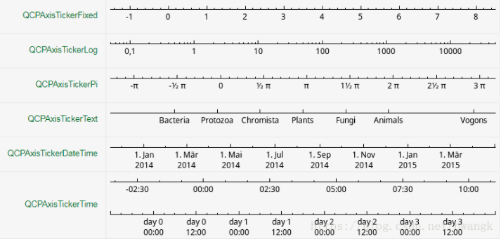

葵花宝典 （dubug版）
作者 huangdatian
学习汇编不是一定要用汇编来写代码。
学好c/c++体系的技术栈必须结合操作系统的运行机制来学习。
（汇编、编译链接、运行时体系、狭义操作系统原理、多线程、网络编程）
定位：数据分析师、嵌入式硬件工程师、初级算法工程师、c++后端开发工程师
你并不知道这些学科底层操作是怎么样的，你也不了解这门知识的本质是啥，只能靠一些零碎的建议和信息，去试图拼凑一个几代人都在论证的学科框架。你以后无法根据自己掌握的东西，去量化你想要的结果，也无法进行自我调节，只能见招拆招、举棋不定，这样，也就永远停留在新手阶段。永远在入门，一直未精通。
出版社：强行编程出版社.
第一次印刷：2021年8月5日(持续更新20年...)
开发环境
vs2019 Qt5.15.2 python3.9 node12.16.3 npm6.14.4 ubuntu kali
变量命名规范
x前 缀 类 型v void 空b 布尔值 (Boolean)by 字节 (Byte)cb 无符号Count of bytes 字节数ch 有符号charn short inti intu 或 w Unsigned int (size_t) 或 WORD (unsigned short)f floatfl doublel long intdw DWORD (unsigned long)ul Unsigned longa 数组 (Array)s 字符串型p Pointerlp Long Pointersz 以null做结尾的字符串型 (String with Zero End)g_ 全局变量m_ 成员变量C 类或结构体tm Text metric 文本规则fg Flagstmp 临时变量cr 颜色参考值 (ColorRef)cx,cy x, y coordinates坐标差（长度 ShortInt）lpfn (*fn)() 回调函数指针h Handle（句柄）fn 函数
一、数据库基础篇
篇章说明：
数据存储的多种解决方案，以及从中择优。
1.c++ / Mysql 数据持久化
项目配置mysql
知识：MySQL中的索引的存储类型有两种：BTREE、HASH。
MyISAM和InnoDB存储引擎：只支持BTREE索引。
配置include、lib目录，导入mysql.h，配置libmysql.lib引用，libmysql.dll
MyAQL语法：
DDL 创建数据库、创建表、修改表结构、删除表
xxxxxxxxxxcreate database if not exists db_name;dropalter add/modify/drop
DML(commit/Rollback)插入、更新
xxxxxxxxxxinsert intoupdate setdelete from
DQL查询
xxxxxxxxxxselect
xxxxxxxxxx//----------------------MysqlApi.h----------------------using std::string;using std::vector;
typedef struct Error{ int errorNum; string errorMsg;}*pError;
class MysqlApi{ MYSQL mysql;public: pError mysqlError;public: MysqlApi(); ~MysqlApi(); bool OpenConnect(const char* host, const char* userName, const char* passwd, const char* dbName, unsigned port); void CloseConnect(); void GetErrorMsg(); bool ExecuteSQL(const char* sql); bool QuerySQL(const char* sql, vector<vector<string>>& qryResult);};
//----------------------MysqlApi.cpp----------------------
MysqlApi::MysqlApi(){ mysqlError = new Error; //初始化mysql数据库 if (mysql_library_init(0, nullptr, nullptr)) { mysqlError->errorMsg = "mysql_library_init failed."; } if (nullptr == mysql_init(&mysql)) { mysqlError->errorMsg = "mysql_init failed."; } if (mysql_options(&mysql, MYSQL_SET_CHARSET_NAME, "gbk")) { mysqlError->errorMsg = "mysql_options failed."; }}
MysqlApi::~MysqlApi(){ delete mysqlError;}
bool MysqlApi::OpenConnect(const char* host, const char* userName, const char* passwd, const char* dbName, unsigned port){ if (mysql_real_connect(&mysql, host, userName, passwd, dbName, port, nullptr, 0) == nullptr) { GetErrorMsg(); return false; } return true;}
void MysqlApi::CloseConnect(){ mysql_close(&mysql);}
void MysqlApi::GetErrorMsg(){ mysqlError->errorNum = mysql_errno(&mysql); mysqlError->errorMsg = mysql_error(&mysql);}
bool MysqlApi::ExecuteSQL(const char* sql){ if (mysql_real_query(&mysql, sql, strlen(sql)) != 0) { GetErrorMsg(); return false; } return true;}
bool MysqlApi::QuerySQL(const char* sql, vector<vector<string>>& qryResult){ MYSQL_RES* result;//保存查询结果对象
if (mysql_real_query(&mysql, sql, strlen(sql)) != 0) { GetErrorMsg(); return false; } result = mysql_store_result(&mysql); //列数(字段数) unsigned fields = mysql_num_fields(result); MYSQL_ROW row;// while (row = mysql_fetch_row(result))//true { vector<string> rowData; for (unsigned i = 0; i < fields; ++i) { if (row[i]) { rowData.push_back(row[i]); } else { rowData.push_back(""); } } qryResult.push_back(rowData); }
//释放结果对象 mysql_free_result(result); return true;}
//----------------------main.cpp----------------------
int main(int argc, char* agrv){ MysqlApi *pMysql = new MysqlApi; bool ret = pMysql->OpenConnect("127.0.0.1", "root", "Tian890__+", "option_web_system", 3306); std::cout << ret; std::cout << "hello"; return 0;}
mysql原理解析
- 实现业务功能，基本的sql语句
- 性能优化，摸透索引、引擎
- 分库分表，主从同步机制、读写分离
- 安全，权限、备份、日志
- 云数据库，mysql源码瓶颈
2.c++ / SQL
c++/redis
xxxxxxxxxxc++
3.python / Mysql 数据持久化
pymysql模块
xxxxxxxxxxself._conn = pymysql.connect(host=,port=,user=,passwd=,charset='utf8')self._cursor=self._conn.cursor() #创建一个游标对象
self._cursor.execute(sql)# 进行insert，update，delete的时候是需要commit的，否则不生效self._cursor.commit()
data = self._cursor.fetchone() #获取单条数据
self._conn.close #断开数据库
4.python / 非关系型数据持久化
（1）mongodb
xxxxxxxxxximport pymongo
class ReadMongodb: def __init__(self): client = pymongo.MongoClient("localhost",27017)
#查看有哪些数据库 print(client.database_names())
#获取数据库对象 db=client.VnTrader_1Min_SR2105_2_Db print(db.collection_names())#查看有哪些集合 collection=db['db_tick_data']#获取集合对象
#collection.insert({"symbol":"cu2013"})#插入数据 #print(collection.find({"symbol":"cu2013"}))
#删除 #collection.remove({"symbol":"cu2013"})
#更新记录 # collection.update({"symbol":"cu2013"},{"$set":{"":"","":""}})
#查询 #collection.find_one() #collection.find_one({"":""}) list = collection.find() fileName=".\\SR105_CZCE_tick_pm.csv" fp=open(fileName,"w+")
title='Ins,datetime,open,high,low,close,open_interest,volume,bid_price_1,ask_price_1' fp.write(title+'\n') for i in list: #把数据存放到CSV文件中 tempStr = i['symbol']+ ','+str(i['datetime'])[0:19]+ ','+str(i['open_price'])+ ','+str(i['high_price'])+ ','+str(i['low_price'])+ ','+str(i['pre_close'])\ + ','+str(i['open_interest'])+ ','+str(i['volume'])+ ','+str(i['bid_price_1'])+ ','+str(i['ask_price_1']) fp.write(tempStr+'\n') fp.close()
（2）redis
redis提供list、set、zset、hash等数据结构的存储。
支持master-slave数据备份。
xxxxxxxxxxpool = redis.ConnectionPool(host=host, port=port,password=passwd,db=1) r = redis.Redis(connection_pool=pool) #失败返回None
# 读r.keys() # 获取所有keyr.hget(name, key)r.hmget('p_info', ['name', 'age', 'gender'])r.hgetall(name) # 获取name对应hash的所有键值r.hlen(name) # 获取name对应的hash中键值对的个数r.hkeys('p_info') # 获取name对应的hash中所有的key的值r.hvals('p_info') # 获取name对应的hash中所有的value的值
r.hscan('p_info', cursor=0, match='n*')# 增量式迭代获取，对于数据大的数据非常有用， # hscan可以实现分片的获取数据，并非一次性 # 将数据全部获取完，从而放置内存被撑爆# name，redis的name# cursor，游标（基于游标分批取获取数据）# match，匹配指定key，默认None 表示所有的key# count，每次分片最少获取个数，默认None表示采用Redis的默认分片个数
# 写r.hset(name, key, value) # hashr.hincrby(name, key, 1) # 自增name对应的hash中的指定key的值，不存在则创建key=amount
r.hset(name, mapping=dic_data) # 批量写r.hmset(name, data) # redis4.0不支持了
# 判断r.hexists('p_info', 'name') # 检查name对应的hash是否存在当前传入的key
# 删除r.delete("key") # 删除keyr.hdel('p_info', 'gender') # 将name对应的hash中指定key的键值对删除
redis批量写入性能优化：
xxxxxxxxxxpipeline
（3）SQLite
5.jscript / localStorage 浏览器本地缓存
6.jscript / sessionStorage 会话缓存
7.jscript / indexedDB
8.jscript / cookie、session的使用
二、语言结构篇
篇章说明：
汇集程序设计语言中深入的语法和结构基础，剖析原理。
汇编
1.c++
c++是一个多重范型编程语言（multiparadigm programming language），
同时支持
过程形式（procedural）、
面向对象形式（object-oriented）、
函数形式（functional）、
泛型形式（generic）、
元编程形式（metaprogramming）的语言。
1.1 类型转换
xxxxxxxxxxstatic_cast 静态类型（在编译期内即可决定其类型的转换） 用法：static_cast<...>(...) 用途： a)用于类层次结构中基类和派生类之间指针或者引用的转换。 b)用于基本数据类型之间的转换，如把int转换成char。 c)可以把空指针转换成目标类型的空指针。 d)把任何类型的表达式转换成void类型。 dynamic_cast 子类和父类之间的多态类型转换（如，父类指针转子类指针） 用法：dynamic_cast<...>(...) 用途：<...>里面是类的指针、类的引用或者void*。 如果<...>里面是类的指针类型，那么(...)里面也必须是指针。 一般情况下，dynamic_cast用于具有多态性的类(即有虚函数的类)的类型转换。 reinterpret_cast 重新解释类型转换（强制类型转换） 用法：reinterpret_cast<...>(...) 用途：转换一个指针为其他类型的指针，也允许将一个指针转换为整数类型，反之亦然。这个操作符能够在非相关的类型 之间进行转换。操作结果只是简单的从一个指针到别的指针的值的二进制拷贝，在类型之间指向的内容不做任何 类型的检查和转换。这是一个强制转换。使用时有很大的风险，慎用之。
const_cast 去掉const属性转换（目标类型只能是指针或者引用） 用法：const_cast<...>(...) 用途：这个类型操纵传递对象的const属性，或者是设置或者是移除1.2 匿名函数lambda
C++中的匿名函数通常为
[capture](parameters)->return-type
{
body
}
parameters：存储函数的参数 return-type：函数的返回值类型 body：函数体
当parameters为空的时候，()可以被省去，当body只有“return”或者返回为void，那么”->return-type“可以被省去，下面将将对其中的参数一一解释
xxxxxxxxxxcapture：[] //未定义变量.试图在Lambda内使用任何外部变量都是错误的.auto f = [](int a) -> int { return a + 1; };std::cout << f(1) << std::endl; // 输出: 2
[x, &y] //x 按值捕获, y 按引用捕获.[&] //用到的任何外部变量都隐式按引用捕获[=] //用到的任何外部变量都隐式按值捕获[&, x] //x显式地按值捕获. 其它变量按引用捕获[=, &z] //z按引用捕获. 其它变量按值捕获
1.3 指针
动态指针
智能指针（boost）

C++ 标准提供了 3 种智能指针，分别是 shared_ptr、unique_ptr 和 weak_ptr、scoped_ptr。
unique_ptr 作为智能指针的一种，unique_ptr 指针自然也具备“在适当时机自动释放堆内存空间”的能力。和 shared_ptr 指针最大的不同之处在于，unique_ptr 指针指向的堆内存无法同其它 unique_ptr 共享，也就是说，每个 unique_ptr 指针都独自拥有对其所指堆内存空间的所有权

xxxxxxxxxxusing namespace std;
std::unique_ptr<int> p1();//创建空的智能指针std::unique_ptr<int> p2(nullptr);
std::unique_ptr<int> p3(new int);
std::unique_ptr<int> p5(new int);*p5 = 10;// p 接收 p5 释放的堆内存int * p = p5.release();cout << *p << endl;//判断 p5 是否为空指针if (p5) { cout << "p5 is not nullptr" << endl;}else { cout << "p5 is nullptr" << endl;}std::unique_ptr<int> p6;//p6 获取 p 的所有权p6.reset(p);cout << *p6 << endl;;std::shared_ptr 引用计数型智能指针
是通过指针保留对象共享所有权的智能指针。多个对象可能拥有同一个对象。发生以下任一情况时，将销毁对象并解除分配其内存：shared_ptr
xxxxxxxxxx struct Base{ Base() { std::cout << " Base::Base()\n"; } // Note: non-virtual destructor is OK here ~Base() { std::cout << " Base::~Base()\n"; }}; struct Derived: public Base{ Derived() { std::cout << " Derived::Derived()\n"; } ~Derived() { std::cout << " Derived::~Derived()\n"; }}; void thr(std::shared_ptr<Base> p){ std::this_thread::sleep_for(std::chrono::seconds(1)); std::shared_ptr<Base> lp = p; // thread-safe, even though the // shared use_count is incremented { static std::mutex io_mutex; std::lock_guard<std::mutex> lk(io_mutex); std::cout << "local pointer in a thread:\n" << " lp.get() = " << lp.get() << ", lp.use_count() = " << lp.use_count() << '\n'; }} int main(){ std::shared_ptr<Base> p = std::make_shared<Derived>(); std::cout << "Created a shared Derived (as a pointer to Base)\n" << " p.get() = " << p.get() << ", p.use_count() = " << p.use_count() << '\n'; std::thread t1(thr, p), t2(thr, p), t3(thr, p); p.reset(); // release ownership from main std::cout << "Shared ownership between 3 threads and released\n" << "ownership from main:\n" << " p.get() = " << p.get() << ", p.use_count() = " << p.use_count() << '\n'; t1.join(); t2.join(); t3.join(); std::cout << "All threads completed, the last one deleted Derived\n";}
//------------输出结果Base::Base() Derived::Derived()Created a shared Derived (as a pointer to Base) p.get() = 0x2299b30, p.use_count() = 1Shared ownership between 3 threads and releasedownership from main: p.get() = 0, p.use_count() = 0local pointer in a thread: lp.get() = 0x2299b30, lp.use_count() = 5local pointer in a thread: lp.get() = 0x2299b30, lp.use_count() = 3local pointer in a thread: lp.get() = 0x2299b30, lp.use_count() = 2 Derived::~Derived() Base::~Base()All threads completed, the last one deleted Derived
1.4联合
union 定义： 在C和C++语言中，有时需要在同一段内存单元中存放不同类型的变量，如把一个整形变量int、一个字符型变量char和一个双精度实型变量double放在同一个地址开始的内存单元中，这3个变量虽然在内存中占的字节数不同，但都从同一地址开始，使用覆盖技术，后一个数据覆盖了前面的数据。这便是联合体union（或者叫共用体）诞生的目的所在。
1.5引用
定义：是某一个变量或对象的别名，对引用的操作与对其所绑定的变量或对象的操作完全等价。
对数组的引用
对指针的引用
引用作为函数的参数
常引用：不允许通过该引用对其所绑定的变量或对象进行修改。
引用作为函数返回值
引用实现多态
引用注意:
1、引用标识符不是求地址运算符，而是起标记作用。
2、引用的类型必须和其所绑定的变量的类型相同。
3、声明引用的同时必须对其初始化，否则系统会出错。
4、引用相当于变量或对象的别名，因此不能再将已有的引用名作为其他变量或对象的名字或别名。
5、引用不是定义一个新的变量或对象，因此不会为引用开辟新的空间存储这个引用。
引用作为函数返回值:必须在定义函数时在函数名前加引用标识符。
xxxxxxxxxxusing std::cout;void swap(int &a, int &b);int main(){ //1.对数组的引用 int arr[3] = { 1,2,3 }; int(&refeArr)[3] = arr;
for (int i = 0; i < 3; ++i) { cout << &refeArr[i] <<" " <<&arr[i] << std::endl; //00A1FE74 00A1FE74 //00A1FE78 00A1FE78 //00A1FE7C 00A1FE7C }
//2.对指针的引用 int a = 10; int* p = &a; int* &prefe = p;
//3.引用作为函数参数 int value1 = 5, value2 = 6; swap(value1, value2); cout << value1 << value2;//65 //使用引用作为函数参数，系统不会花费时间在内存开辟空间 //参数数据大时一般使用引用
//4.常引用 const int &crefe = a; cefer = 11;//错误 return 0;}void swap(int &a, int &b){ int temp = a; a = b; b = temp;}
1.6指针数组
（int *pArr[]）指针数组常常用于存储一些长度不相等的字符串数据。
1.7多态
多态定义：允许将父类对象设置为和一个或更多的它的子类对象相等的技术，赋值之后，父对象可以根据当前赋值给它的子对象的特征以不同的方式运作。 实现原理：覆盖、重载。 覆盖：子类重新定义父类的虚函数。 重载：允许存在多个同名函数，而这些函数的参数表不同。
具体实现方式：
C++ 的 多态 就是靠 父类指针指向子类对象 +虚函数来实现的。 父类指针指向子类对象 ，可以调用子 类 从 父 类继承来的那一部分，但如果 父类 中声明了virtual，则可以调用子 类 中的方法，这样就实现了 多态 。
1.8 std::function
通过std::function对C++中各种可调用实体（普通函数、Lambda表达式、函数指针、以及其它函数对象等）的封装，形成一个新的可调用的std::function对象；让我们不再纠结那么多的可调用实体。
xxxxxxxxxxusing namespace std; std::function< int(int)> Functional; // 普通函数int TestFunc(int a){ return a;} // Lambda表达式auto lambda = [](int a)->int{ return a; }; // 仿函数(functor)class Functor{public: int operator()(int a) { return a; }}; // 1.类成员函数// 2.类静态函数class TestClass{public: int ClassMember(int a) { return a; } static int StaticMember(int a) { return a; }}; int main(){ // 普通函数 Functional = TestFunc; int result = Functional(10); cout << "普通函数："<< result << endl; // Lambda表达式 Functional = lambda; result = Functional(20); cout << "Lambda表达式："<< result << endl; // 仿函数 Functor testFunctor; Functional = testFunctor; result = Functional(30); cout << "仿函数："<< result << endl; // 类成员函数 TestClass testObj; Functional = std::bind(&TestClass::ClassMember, testObj, std::placeholders::_1); result = Functional(40); cout << "类成员函数："<< result << endl; // 类静态函数 Functional = TestClass::StaticMember; result = Functional(50); cout << "类静态函数："<< result << endl; return 0;}1.9 std::unique_lock
std::unique_lock对象以独占所有权的方式(unique owership)管理mutex对象的上锁和解锁操作，即在unique_lock对象的声明周期内，它所管理的锁对象会一直保持上锁状态；而unique_lock的生命周期结束之后，它所管理的锁对象会被解。
std::thread
std::unique_lock
std::find_if
xxxxxxxxxx//查找numbers中大于value的元素int value(5);auto iter1 = std::find_if(std::begin(numbers), std::end(numbers),[value](int n) { return n > value; });
c++11
constexpr
（常量表达式函数）整个函数的函数体中，除了可以包含 using 指令、typedef 语句以及 static_assert 断言外，只能包含一条 return 返回语句。
xxxxxxxxxxconstexpr int display(int x) { //可以添加 using 执行、typedef 语句以及 static_assert 断言 return 1 + 2 + x;}noexcept 声明没有异常
xxxxxxxxxxvoid swap(Type& x, Type& y) noexcept //C++11{ x.swap(y);}
2.python
•Proficient with Python development, familiar with popular framework/library. e.g. Django, Flask, Selenium, Scrapy, Beautiful Soup, Numpy, Pandas etc. •Proficient with database. e.g. Oracle, SQL Server, PostgreSQL •Familiar with development tooling, like Git, SVN, JIRA, Confluence, etc. •Knowledge and experience in Agile and DevOps. •Good at English.
内置函数：
绝对值：abs()
求圆的面积：area_of_circle(r)
max()
min()
sum()
sorted()
xxxxxxxxxx>>> sorted([36, 5, -12, 9, -21], key=abs)[5, 9, -12, -21, 36]# reverse=True 反向排序
filter() 生成器
和 map()类似，filter()也接收一个函数和一个序列。和 map()不同的时， filter()把传入的函数依次作用于每个元素，然后根据返回值是 True 还 是 False 决定保留还是丢弃该元素。（素数、回数）
xxxxxxxxxx把一个序列中的空字符串删掉，可以这么写：def not_empty(s):return s and s.strip()list(filter(not_empty, ['A', '', 'B', None, 'C', ' ']))# 结果: ['A', 'B', 'C']
字符串：
xxxxxxxxxx''.lower()转小写
xxxxxxxxxxtype() 不会认为子类是一种父类类型，不考虑继承关系isinstance() 会认为子类是一种父类类型，考虑继承关系>>> isinstance (a,str)False>>> isinstance (a,(str,int,list)) # 是元组中的一个返回 TrueTrue
生成器 generator：
generator 保存的是算法，每次调用 next(g)，就计算出 g 的 下一个元素的值，直到计算到最后一个元素，没有更多的元素时，抛出 StopIteration 的错误。(杨辉三角、斐波那契数列)
xxxxxxxxxx>>> g = (x * x for x in range(10))>>> g<generator object <genexpr> at 0x1022ef630>>>> next(g)0
generator 的函数，在每次调用 next()的时候执行，遇到 yield 语句返回， 再次执行时从上次返回的 yield 语句处继续执行。
odd 不是普通函数，而是 generator，在执行过程中，遇到 yield 就中断，下次又继续执行。
xxxxxxxxxx>>> o = odd()>>> next(o)step 11>>> next(o)step 23
lambda 函数：
lambda 函数是一种小的匿名函数
lambda 函数可接受任意数量的参数，但只能有一个表达式
xxxxxxxxxxx = lambda a : a + 10print(x(7)) #17
可变参数：
xxxxxxxxxxdef calc(*num):sum = 0for n in num:sum = sum + n*nreturn sum>>>calc(1,2)5>>>n = [1,2]>>>calc(*n)5
默认参数：必须是不可变类型
判断是否可以迭代：
xxxxxxxxxx>>> from collections import Iterable>>> isinstance('abc', Iterable) # str 是否可迭代
map()和reduce()函数
xxxxxxxxxx>>> def f(x):... return x * x...>>> r = map(f, [1, 2, 3, 4, 5, 6, 7, 8, 9])#把这个函数作用在一个 list上>>> list(r)[1, 4, 9, 16, 25, 36, 49, 64, 81]
>>> list(map(str, [1, 2, 3, 4, 5, 6, 7, 8, 9]))['1', '2', '3', '4', '5', '6', '7', '8', '9']
>>> from functools import reduce #reduce 把结果继续和序列的下一个元素做累积计算>>> def add(x, y):... return x + y...>>> reduce(add, [1, 3, 5, 7, 9])25
编码：
python3是Unicode编码
xxxxxxxxxxord('A')函数获取字符的整数表示 '65'chr(66)把编码转换为对应的字符 'B'知道字符的整数编码，可以用十六进制这么写：>>>'\u4e2d\u6587''中文'网络传输和保存到磁盘，需要用bytesascii转bytes：'ABC'.encode('ascii')utf-8转bytes：'中文'.encode('utf-8')翻转：decode()
容器：
list
xxxxxxxxxxappend() 尾部追加insert(1,'a')pop() 删尾部元素sort()count('a') a出现的次数list(range(1,11))异常：越界
True：非0数值、非空字符串、非空list，否则为False
return None可以简写成return
dict
xxxxxxxxxx异常：key不存在get() key不存在返回None，或自定返回-1 get("key",-1)
set：
xxxxxxxxxxset([1,2,3])add()remove(index)下标删除交：s1 & s2并：s1 | s2
math数学库：
xxxxxxxxxxsqrt()平方根sin()cos()
推导式：
xxxxxxxxxxfor 循环后面还可以加上 if 判断，这样我们就可以筛选出仅偶数的平方：>>> [x * x for x in range(1, 11) if x % 2 == 0][4, 16, 36, 64, 100]还可以使用两层循环，可以生成全排列：>>> [m + n for m in 'ABC' for n in 'XYZ']['AX', 'AY', 'AZ', 'BX', 'BY', 'BZ', 'CX', 'CY', 'CZ']
类的特殊方法:
xxxxxxxxxxclass Test(object): def __new__(cls,*args,**kargs):# 构造函数，返回实例（不重写，默认存在） instance = object.__new__(cls,*args,**kargs) return instance def __init__(self):# 对返回的实例进行一些属性的初始化 self.name = "Test" def run(self): pass def __enter__(self):# init函数后进入 return self def __exit__(self):# 退出实例，清除残留 del self def __str__(self):# 打印输出 return "name:{}".format(self.name) def __repr__(self):# cmd交互打印输出 return "name:{}".format(self.name) def __setattr__(self, key, value):# 设置属性 object.__setattr__(self, key, value)
def __getattribute__(self, item):# 获取属性 return object.__getattribute__(self, item)
def __getattr__(self, item):# 属性不存在调用，做异常处理 try: return object.__getattribute__(self, item) except: return "Not find attribute: {}".format(item)
def __delattr__(self, item):# 删除属性 object.__delattr__(item) def __call__(self,name):# 让类能够像函数一样调用 self.name = name self.run()
with Test() as ts:#自动调用 enter 和 exit ts.run() # call 例子ts = Test()ts("name")容器和序列的特殊函数：
xxxxxxxxxxdef __len__(self):# 返回某序列长度 return len(self.name) def __contains__(self):# 判断是否存在 return ch in self.name字符串format格式化
xxxxxxxxxx>>> '{:0>2d}'.format(2) # 数字左边补0'02'
{:.2f} # 保留小数后两位{:+.2f} # 带符号保留小数后两位{:.0f} # 不带小数{:x<4d} # 数字补x (填充右边, 宽度为4){:,} # 以逗号分隔的数字格式{:.2%} # 两位小数百分比格式{:.2e} # 科学计数法{:>10d} # 右对齐 (默认, 宽度为10){:<10d} # 左对齐 (宽度为10){:^10d} # 中间对齐 (宽度为10)'{:b}'.format(11) # 二进制'{:d}'.format(11)'{:o}'.format(11) # 八进制'{:x}'.format(11)'{:#x}'.format(11) # 0xb'{:#X}'.format(11) # 0XB
1、for循环中的else条件
如果找到了奇数，就会打印该数值，并且执行break语句，跳过else语句。
没有的话，就不会执行break语句，而是执行else语句
xxxxxxxxxxnumbers = [2, 4, 6, 8, 1]
for number in numbers: if number % 2 == 1: print(number) breakelse: print("No odd numbers")2、从列表中获取元素，**定义多个变量**
xxxxxxxxxxmy_list = [1, 2, 3, 4, 5]one, two, three, four, five = my_list3、使用heapq模块，获取列表中n个最大或最小的元素
xxxxxxxxxximport heapq
scores = [51, 33, 64, 87, 91, 75, 15, 49, 33, 82]
print(heapq.nlargest(3, scores)) # [91, 87, 82]print(heapq.nsmallest(5, scores)) # [15, 33, 33, 49, 51]4、将列表中的所有元素作为参数传递给函数
xxxxxxxxxxmy_list = [1, 2, 3, 4]
print(my_list) # [1, 2, 3, 4]print(*my_list) # 1 2 3 4
def sum_of_elements(*arg): total = 0 for i in arg: total += i
return total
result = sum_of_elements(*[1, 2, 3, 4])print(result) # 105、获取列表的所有中间元素
xxxxxxxxxx_, *elements_in_the_middle, _ = [1, 2, 3, 4, 5, 6, 7, 8]print(elements_in_the_middle) # [2, 3, 4, 5, 6, 7]6、使用一行代码赋值多个变量
xxxxxxxxxxone, two, three, four = 1, 2, 3, 47、列表推导式
xxxxxxxxxxnumbers = [1, 2, 3, 4, 5]squared_numbers = [num * num for num in numbers]
print(squared_numbers) # [1, 4, 9, 16, 25]
dictionary = {'a': 4, 'b': 5}squared_dictionary = {key: num * num for (key, num) in dictionary.items()}
print(squared_dictionary) # {'a': 16, 'b': 25}8、通过Enum枚举同一标签或一系列常量的集合
xxxxxxxxxxfrom enum import Enum
class Status(Enum): NO_STATUS = -1 NOT_STARTED = 0 IN_PROGRESS = 1 COMPLETED = 2
print(Status.IN_PROGRESS.name) # IN_PROGRESSprint(Status.COMPLETED.value) # 29、重复字符串
xxxxxxxxxxname = "Banana"print(name * 4) # BananaBananaBananaBanana10、比较3个数字的大小
xxxxxxxxxx1 < x < 10
11、使用1行代码合并字典
xxxxxxxxxxfirst_dictionary = {'name': 'Fan', 'location': 'Guangzhou'}second_dictionary = {'name': 'Fan', 'surname': 'Xiao', 'location': 'Guangdong, Guangzhou'}
result = first_dictionary | second_dictionary
print(result)# {'name': 'Fan', 'location': 'Guangdong, Guangzhou', 'surname': 'Xiao'}29、合并字典
xxxxxxxxxxdictionary_one = {"a": 1, "b": 2}dictionary_two = {"c": 3, "d": 4}
merged = {**dictionary_one, **dictionary_two}
print(merged) # {'a': 1, 'b': 2, 'c': 3, 'd': 4}
12、查找元组中元素的索引
xxxxxxxxxxbooks = ('Atomic habits', 'Ego is the enemy', 'Outliers', 'Mastery')
print(books.index('Mastery')) # 313、将字符串转换为字符串列表
xxxxxxxxxxinput = "[1,2,3]"
import ast
def string_to_list(string): return ast.literal_eval(string)
string = "[1, 2, 3]"my_list = string_to_list(string)print(my_list) # [1, 2, 3]
string = "[[1, 2, 3],[4, 5, 6]]"my_list = string_to_list(string)print(my_list) # [[1, 2, 3], [4, 5, 6]]14、计算两数差值
xxxxxxxxxxdef subtract(a, b): return a - b
print((subtract(a=1, b=3))) # -2print((subtract(b=3, a=1))) # -215、用一个print()语句打印多个元素
xxxxxxxxxxprint(1, 2, 3, "a", "z", "this is here", "here is something else")16、在同一行打印多个元素
xxxxxxxxxxprint("Hello", end="")print("World") # HelloWorld
print("Hello", end=" ")print("World") # Hello World
print('words', 'with', 'commas', 'in', 'between', sep=', ')# words, with, commas, in, between17、打印多个值，在每个值之间使用自定义分隔符
xxxxxxxxxxprint("29", "01", "2022", sep="/") # 29/01/2022
print("name", "domain.com", sep="@") # name@domain.com22、使用下划线分割数值较大的数字
xxxxxxxxxxprint(1_000_000_000) # 1000000000print(1_234_567) # 123456723、反转列表
xxxxxxxxxxmy_list = ['a', 'b', 'c', 'd']
my_list.reverse()
print(my_list) # ['d', 'c', 'b', 'a']24、使用步进函数对字符串切片
xxxxxxxxxxmy_string = "This is just a sentence"print(my_string[0:5]) # This
# Take three steps forwardprint(my_string[0:10:3]) # Tsse25、反向切片
xxxxxxxxxxmy_string = "This is just a sentence"print(my_string[10:0:-1]) # suj si sih
# Take two steps forwardprint(my_string[10:0:-2]) # sjs i26、使用开始或结束索引进行切片
xxxxxxxxxxmy_string = "This is just a sentence"print(my_string[4:]) # is just a sentence
print(my_string[:3]) # Thi27、/和//的区别
xxxxxxxxxxprint(3/2) # 1.5print(3//2) # 128、==和is的区别
xxxxxxxxxxfirst_list = [1, 2, 3]second_list = [1, 2, 3]
# 比较两个值print(first_list == second_list) # True
# 是否指向同一内存print(first_list is second_list) # False
third_list = first_list
print(third_list is first_list) # True30、检查字符串是否大于另一字符串
xxxxxxxxxxfirst = "abc"second = "def"
print(first < second) # True
second = "ab"print(first < second) # False31、检查字符串是否以特定字符开头(不使用索引)
xxxxxxxxxxprint(id(1)) # 4325776624print(id(2)) # 4325776656print(id("string")) # 432797828833、整数、浮点数、字符串、布尔值和元组都是不可变的
当变量被赋值为整数、浮点数、字符串、布尔值、元组这些不可变类型后，该变量就会指向一个内存对象。
如果重新给变量再赋值，它的内存对象就会发生改变。
xxxxxxxxxxnumber = 1print(id(number)) # 4325215472print(id(1)) # 4325215472number = 3print(id(number)) # 4325215536print(id(1)) # 4325215472
35、列表、集合和字典都是可变的
这意味着发生更改时，不会改变其内存对象。
xxxxxxxxxxcities = ["Beijing", "Guangzhou", "chengdu"]print(id(cities)) # 4482699712cities.append("Beijing")print(id(cities)) # 4482699712
36、把一个列表变成不可变的列表
使用frozenset()后，你就无法更改了。
xxxxxxxxxxmy_set = frozenset(['a', 'b', 'c', 'd'])my_set.add("a")
37、if-elif块可以在没有else块的情况下存在
但是elif不能在没有if语句之前独立存在。
xxxxxxxxxxdef check_number(number):if number > 0:return "Positive"elif number == 0:return "Zero"return "Negative"print(check_number(1)) # Positive
38、使用sorted()检查2个字符串是否为相同
xxxxxxxxxxdef check_if_anagram(first_word, second_word): first_word = first_word.lower() second_word = second_word.lower() return sorted(first_word) == sorted(second_word)
print(check_if_anagram("testinG", "Testing")) # Trueprint(check_if_anagram("Here", "Rehe")) # Trueprint(check_if_anagram("Know", "Now")) # False39、获取字符的Unicode值
xxxxxxxxxxprint(ord("A")) # 65print(ord("B")) # 66print(ord("C")) # 66print(ord("a")) # 97
42、交换字典的键、值位置
xxxxxxxxxxdictionary = {"a": 1, "b": 2, "c": 3}reversed_dictionary = {j: i for i, j in dictionary.items()}print(reversed) # {1: 'a', 2: 'b', 3: 'c'}
43、将布尔值转换为数字
xxxxxxxxxxprint(int(False)) # 0print(float(True)) # 1.0
44、在算术运算中使用布尔值
xxxxxxxxxxx = 10y = 12result = (x - False)/(y * True)print(result) # 0.8333333333333334
45、将任何数据类型转换为布尔值
xxxxxxxxxxprint(bool(.0)) # Falseprint(bool(3)) # Trueprint(bool("-")) # Trueprint(bool("string")) # Trueprint(bool(" ")) # True
46、将值转换为复数
xxxxxxxxxxprint(complex(10, 2)) # (10+2j)#也可以将数字转换为十六进制数print(hex(11)) # 0xb
47、在列表的第一个位置添加一个值
xxxxxxxxxxmy_list = [3, 4, 5]my_list.append(6)my_list.insert(0, 2)print(my_list) # [2, 3, 4, 5, 6]
lambda
xxxxxxxxxxdef sum(x,y):return x+yprint(sum(1,2))sum = lambda x,y : x+yprint(sum(1,2))
50、使用filter()，获得一个新对象
xxxxxxxxxxmy_list = [1, 2, 3, 4]odd = filter(lambda x: x % 2 == 1, my_list)print(list(odd)) # [1, 3]print(my_list) # [1, 2, 3, 4]
51、map()返回一个新对象
xxxxxxxxxxmy_list = [1, 2, 3, 4]squared = map(lambda x: x ** 2, my_list)print(list(squared)) # [1, 4, 9, 16]print(my_list) # [1, 2, 3, 4]
52、range()的step参数
xxxxxxxxxxfor number in range(1, 10, 3):print(number, end=" ")# 1 4 7
54、不需要和0比较长度
xxxxxxxxxxdef get_element_with_comparison(my_list):if len(my_list) > 0:return my_list[0]def get_first_element(my_list):if len(my_list):return my_list[0]
55、可以在同一个作用域内多次定义一个方法
xxxxxxxxxxdef get_address():return "First address"def get_address():return "Second address"def get_address():return "Third address"print(get_address()) # Third address
56、在外部直接访问私有属性
在定义属性或方法时，在属性名或者方法名前增加两个下划线，定义的就是私有属性或方法。
如果想要在外部访问，那么只需要在名称前面加上 '类名' 变成 '类名__名称'。
xxxxxxxxxxclass Engineer:def __init__(self, name):self.name = nameself.__starting_salary = 62000dain = Engineer('Dain')print(dain._Engineer__starting_salary) # 62000
57、检查对象的内存使用情况
xxxxxxxxxximport sysprint(sys.getsizeof("bitcoin")) # 56
58、定义一个方法，可以调用任意个参数
xxxxxxxxxxdef get_sum(*arguments):result = 0for i in arguments:result += ireturn resultprint(get_sum(1, 2, 3)) # 6print(get_sum(1, 2, 3, 4, 5)) # 15print(get_sum(1, 2, 3, 4, 5, 6, 7)) # 28
59、使用super()或父类的名称调用父类的初始化
使用super函数调用父类的初始化方法。
xxxxxxxxxxclass Parent: def __init__(self, city, address): self.city = city self.address = address
class Child(Parent): def __init__(self, city, address, university): super().__init__(city, address) self.university = university
child = Child('Peking University', 'Fudan University', 'Tsinghua University')print(child.university) # Tsinghua University60、在类中使用 + 操作符
xxxxxxxxxxclass Expenses: def __init__(self, rent, groceries): self.rent = rent self.groceries = groceries
def __add__(self, other): return Expenses(self.rent + other.rent, self.groceries + other.groceries)
april_expenses = Expenses(1000, 200)may_expenses = Expenses(1000, 300)
total_expenses = april_expenses + may_expensesprint(total_expenses.rent) # 2000print(total_expenses.groceries) # 50061、在类中使用 < 和 == 操作符
xxxxxxxxxxclass Game: def __init__(self, score): self.score = score
def __lt__(self, other): return self.score < other.score
first = Game(1)second = Game(2)print(first < second) # True
class Journey: def __init__(self, location, destination, duration): self.location = location self.destination = destination self.duration = duration
def __eq__(self, other): return ((self.location == other.location) and (self.destination == other.destination) and (self.duration == other.duration))
first = Journey('Location A', 'Destination A', '30min')second = Journey('Location B', 'Destination B', '30min')
print(first == second)
__sub__() for -__mul__() for *__truediv__() for /__ne__() for !=__ge__() for >=__gt__() for >62、为类的对象定义自定义的可打印版本
xxxxxxxxxxclass Rectangle: def __init__(self, a, b): self.a = a self.b = b
def __repr__(self): return repr('Rectangle with area=' + str(self.a * self.b))
print(Rectangle(3, 4)) # 'Rectangle with area=12'63、交换字符串中字符的大小写
xxxxxxxxxxstring = "This is just a sentence."result = string.swapcase()print(result) # tHIS IS JUST A SENTENCE.
64、检查字符串是否都是空格
xxxxxxxxxxstring = " "result = string.isspace()print(result) # True
65、检查字符串是否都是字母或数字
xxxxxxxxxxname = "Password"print(name.isalnum()) # Truename = "Secure Password "print(name.isalnum()) # Falsename = "S3cur3P4ssw0rd"print(name.isalnum()) # Truename = "133"print(name.isalnum()) # True
66、检查字符串是否都是字母
xxxxxxxxxxstring = "Name"print(string.isalpha()) # Truestring = "Firstname Lastname"print(string.isalpha()) # Falsestring = "P4ssw0rd"print(string.isalpha()) # False
67、根据参数删除字符
右侧开始
xxxxxxxxxxstring = "This is a sentence with "print(string.rstrip()) # "This is a sentence with"string = "this here is a sentence…..,,,,aaaaasd"print(string.rstrip(".,dsa")) # "this here is a sentence"
左侧开始
xxxxxxxxxxstring = "ffffffffFirst"print(string.lstrip("f")) # First
68、检查字符串是否为数字
xxxxxxxxxxstring = "seven"print(string.isdigit()) # Falsestring = "1337"print(string.isdigit()) # Truestring = "5a"print(string.isdigit()) # Falsestring = "2**5"print(string.isdigit()) # False
69、检查字符串是否为中文数字
xxxxxxxxxx# 42673string = "四二六七三"print(string.isdigit()) # Falseprint(string.isnumeric()) # True
70、检查字符串是否所有单词都是大写开头
xxxxxxxxxxstring = "This is a sentence"print(string.istitle()) # Falsestring = "10 Python Tips"print(string.istitle()) # Truestring = "How to Print A String in Python"# Falseprint(string.istitle())string = "PYTHON"print(string.istitle()) # False
71、在元组中使用负索引
xxxxxxxxxxnumbers = (1, 2, 3, 4)print(numbers[-1]) # 4print(numbers[-4]) # 1
72、在元组中嵌套列表和元组
xxxxxxxxxxmixed_tuple = (("a"*10, 3, 4), ['first', 'second', 'third'])print(mixed_tuple[1]) # ['first', 'second', 'third']print(mixed_tuple[0]) # ('aaaaaaaaaa', 3, 4)
73、快速统计元素在列表中出现的次数
xxxxxxxxxxnames = ["Besim", "Albert", "Besim", "Fisnik", "Meriton"]print(names.count("Besim")) # 2
74、使用slice()获取元素
xxxxxxxxxxmy_list = [1, 2, 3, 4, 5, 6, 7, 8, 9, 10]slicing = slice(-4, None)print(my_list[slicing]) # [4, 5, 6]print(my_list[-3]) # 4# 切片string = "Data Science"slice_object = slice(5, None)print(string[slice_object]) # Science
75、计算元素在元组中出现的次数
xxxxxxxxxxmy_tuple = ('a', 1, 'f', 'a', 5, 'a')print(my_tuple.count('a')) # 3
77、步进获得元组
xxxxxxxxxxmy_tuple = (1, 2, 3, 4, 5, 6, 7, 8, 9, 10)print(my_tuple[::3]) # (1, 4, 7, 10)
78、通过索引获取子元组
xxxxxxxxxxmy_tuple = (1, 2, 3, 4, 5, 6, 7, 8, 9, 10)print(my_tuple[3:]) # (4, 5, 6, 7, 8, 9, 10)
79、将列表、集合、字典中所有元素删除
xxxxxxxxxxmy_list = [1, 2, 3, 4]my_list.clear()print(my_list) # []my_set = {1, 2, 3}my_set.clear()print(my_set) # set()my_dict = {"a": 1, "b": 2}my_dict.clear()print(my_dict) # {}
80、合并集合
xxxxxxxxxxfirst_set = {4, 5, 6}second_set = {1, 2, 3}print(first_set.union(second_set)) # {1, 2, 3, 4, 5, 6}
3.jscript
1.特点：
j弱类型语言
代码从上到下执行
不存在方法重载，会覆盖
构造函数this: 属于当前对象
原形prototype对象: 改动一个对象的属性可能会影响到其他的对象
xxxxxxxxxx//js异常处理try { // 一些不好的事情发生了，抛出错误 throw { name: "MyErrorType", // 自定义错误类型 message: "oops", extra: "This was rather embarrassing", remedy: genericErrorHandler // 应该由谁处理 };} catch (e) { // 通知用户 alert(e.message); // "oops" // 优雅地处理错误 e.remedy(); // 调用genericErrorHandler()}2.块标签
帮助文档：@module - JSDoc在线手册 (dba.cn)
xxxxxxxxxx@namespace 包含对象的全局引用@class 代表一个对象或构造函数@method 定义对象的方法，并指定方法的名称@param 列出函数需要的参数，参数的类型放在一对花括号内，后面跟参数名和描述@return
例如：/** * My JavaScript application * * @module myapp */
var MYAPP = {};
/*** A math utility* @namespace MYAPP* @class math_stuff*/MYAPP.math_stuff = { /** * Sums two numbers * * @method sum * @param {Number} a First number * @param {Number} b The second number * @return {Number} The sum of the two inputs */ sum: function (a, b) { return a + b; }, /** * Multiplies two numbers * * @method multi * @param {Number} a First number * @param {Number} b The second number * @return {Number} The two inputs multiplied */ multi: function (a, b) { return a * b; }};3.数据类型
xxxxxxxxxxbooleannumberstringUndefinedNullObject
//可以用new来创建变量，清空变量用赋值为nullvar carname=new String;var x= new Number;var y= new Boolean;var cars= new Array;var person= new Object;var m = new Map;
//map遍历for(const key of map.keys()){//values()类似 报错keys不是函数 if(key.hasOwnProperty(key)){//增强程序的健壮性 }}for(const [key,value] in map.entries()){ // 报错entries不是函数 if(key.hasOwnProperty(key)){//增强程序的健壮性 }}map.forEach((key,value){ console.log(kev,value);});4.对象和数组遍历 for in
循环同样可以用于数组（JavaScript中数组也是对象），但不推荐这样做。当数组对象被扩充了自定义函数时，可能会产生逻辑错误。另外，for-in循环中属性的遍历顺序是不固定的，所以最好数组使用普通的for循环，对象使用for-in循环。
5.数组对象方法：
concat()连接两个或更多的数组，并返回结果
join(“|”)把数组的所有元素放入一个字符串。元素通过指定的分隔符进行分隔
push()向数组的末尾添加一个或更多元素，并返回新的长度
reverse()颠倒数组中元素的顺序
sort()对数组的元素进行排序
splice(删除元素下标，删数量，插入的新内容)删除元素，并向数组添加新元素
xxxxxxxxxx.splice(2, 3, "Lemon", "Kiwi");//在下标2位置之前添加两个字符串元素，同事删除下标2往后3个位置元素
parseInt() //类型转换
6.匿名方法
写法1：
function （params）{
}
写法2：
(function (param1,param2)
{
...
})(1,2);
7.DOM
xxxxxxxxxxdocument Object Modeldocument.getElementById();ht5新document.querySelector("#id");
$(function(){})//Dom对象加载完毕$(document).ready(function(){});
//添加点击事件document.getElementById('sendBtn').onclick = function () {}//添加option选项document.getElementById("dateSections").options.add(new Option("All Dates", "allDate"));var txt3=document.createElement("p");txt3.innerHTML="Text.";
//当用户在 object元素 上右击鼠标时执行 JavaScript ：object.oncontextmenu=function(){myScript};
8.注册事件
xxxxxxxxxxevent.target.value=document.appendChild();//添加子元素：document.insertBefore(newEle,oldEle);//在某元素前添加元素：document.firstChild；document.childNodes;//获取所有子节点元素document.removeChild();//移除子节点元素
9.对象封装
xxxxxxxxxxbtn = document.getElementById("btn");btn.onclick = function () { window.alert("btn click."); var c = new myConstructor("myConstructor"); c.appendToMessage("special");}function myConstructor(message) { this.myMessage = message; //私有属性 var separator = '-'; var myOwner = this;
//私有方法 function alertMessage() { alert(myOwner.myMessage); //alert(myOwner.separator);//undefined 不能访问私有 } //在实例化时显示信息 alertMessage();
//特权方法 this.appendToMessage = function(string){ this.myMessage += separator + string; alertMessage(); }} 10.回调函数
xxxxxxxxxxpaper = {};paper.name="蒙娜丽莎.png";//在函数中使用回调函数function Run(arg,callBack){ callBack(arg);}function Play(what){console.log(what);}Run(paper.name,Play);
//在对象中使用回调函数var obj ={};obj.color="red";obj.paint=function(paper){ console.log("%s color is %s.",paper,this.color);}function Run1(arg,callBack,callBackObj){ if (typeof(callBack === "function")) { callBack.call(callBackObj,arg); //call 可以改变函数内部this指向 //https://blog.csdn.net/tkrj7_/article/details/112964804 }}Run1(paper.name,obj.paint,obj);
11.延时函数
setTimeout()和setInterval()
xxxxxxxxxxvar id = setInterval(function(){ alert("Hello"); }, 3000);//每三秒（3000 毫秒）弹出 "Hello"
//原型setInterval(code, milliseconds);setInterval(function, milliseconds, param1, param2, ) clearInterval(id) //取消(可以做进度条)
12.在一个函数内返回一个已经声明的函数
xxxxxxxxxx//返回函数var play = function () { console.log("play1"); return function () { console.log("play2"); };};// 使用setup()函数var child = play(); child(); 13.重定义函数
当函数中包含一些初始化操作，并希望这些初始化操作只执行一次，那么这种模式是非常合适的
xxxxxxxxxx//重定义函数var mouth = function () { console.log("only once!"); mouth = function () { console.log("twice!"); };};mouth(); mouth(); mouth(); mouth(); //only once!//twice!//twice!//twice!14.即时函数
即时函数应用很广泛。它可以帮助我们做一些不想留下全局变量的工作。所有定义的变量都只是即时函数的本地变量，你完全不用担心临时变量会污染全局对象。
xxxxxxxxxx(function () { console.log("handsome once!");})();
(function (where, when) { console.log(where + when);}("china time:", new Date()));
15.call 和 apply
// call() 方法分别接受参数。 // apply() 方法接受数组形式的参数。
xxxxxxxxxx// 重新定义函数的执行环境（this指向）// call第一个参数，用于指定将要调用此函数的对象var person = { fullName: function () { return this.firstName + " " + this.lastName; }}var person1 = { firstName: "Bill", lastName: "Gates",}var person2 = { firstName: "Steve", lastName: "Jobs",}person.fullName.call(person1); // 将返回 "Bill Gates"
// 带参数的call调用var person = { fullName: function (city, country) { return this.firstName + " " + this.lastName + "," + city + "," + country; }}var person1 = { firstName: "Bill", lastName: "Gates"}person.fullName.call(person1, "Seattle", "USA");
// putvar person = { fullName: function (city, country) { return this.firstName + " " + this.lastName + "," + city + "," + country; }}var person1 = { firstName: "John", lastName: "Doe"}person.fullName.apply(person1, ["Oslo", "Norway"]);16.$.extend()的使用
1.1 extend(result,item1,item2…..)
这里这个方法主要用来合并，将所有的参数项都合并result中，并返回result，但是这
样就会破坏result的结构。
1.2 extend({},item1,item2,……)
用这个方法，可以将所得的结果全部合并在{}中，并返回，而且还不会破坏原有的项的结构。
xxxxxxxxxxVar item={name:”olive”,age:23};Var item1={name:”Momo”,sex:”gril”};Var result=$.extend({},item,item1);结果：Result={name:”Momo”,age:23,sex:”gril”};
1.3 extend(bool,{},item1,item2….)
Extend方法还有带bool型参数的重载。
bool型参数为true表示深拷贝，为false时表示浅拷贝。具体可以通过一下示例来说明：
示例：
xxxxxxxxxx var item={name：“olive”,age:23,address{provice:”河南”,city:”郑州”}}; var item1={sex:”girl”,address{city:”北京”}}; var result=$.extend(true,item,item1); var result1=$.extend(false,item,item1); 结果： Result={name：“olive”,age:23,sex:”gril”,address:{provice:”河南”,city:”北京”}}; Result1={name：“olive”,age:23,sex:”gril”,address:{ city:”北京”}};$.fn.extend(item) 为每一个实例添加一个实例方法
xxxxxxxxxx$.fn.extend({ hello:function(value){ alert(“hello “+value); }});$(“#id”).hello(“Olive”);$.extend(item) 为Jquery类添加了静态方法
该方法是将item合并到Jquery的全局对象中去，相当于为Jquery全局对象添加了一个 静态方法.
xxxxxxxxxx`$.extend({SayHello:function(value){alert(“hello “+value);}});``$.SayHello(“Olive”);
获取控件的截图下载到本地
html2canvas
js数据保存到本地
Blob
4.css
样式优先级： style="" > id > class > 标签
鼠标：
xxxxxxxxxx:visiteda:visited{ background-color:yellow;}:active 点击:hover 悬浮全部html标签通用的属性：
xxxxxxxxxxinput:focus
//动画animation
背景background-size:80px 60px;background-image: url(bgimage.gif);background-repeat:no-repeat;background-attachment:fixed;// 属性指定背景图像是应该滚动还是固定的background-position:center;background-color: lightblue;background-color:hsla(hue, saturation, lightness,alpha)//色相（0~360），饱和度(0%~100%),亮度（0%~100%）opacity: 0.3;//透明度在使用简写属性时，属性值的顺序为：background-colorbackground-imagebackground-repeatbackground-attachmentbackground-positionbackground: #ffffff url("tree.png") no-repeat right top;//简写 上右下左
颜色color:white;color:rgba(red, green, blue, alpha)//alpha 透明度0~1
边框属性border:1px solid black;border-style: dotted;//点线、虚线(dashed)、实线(solid)、凹槽线(groove)border-width: 5px;border-color: red;border-top-style: dotted;//顶部边框线border-radius: 5px;//边框圆角
边框轮廓outline-style: solid;outline-coloroutline-widthoutline-offset: 1px;//轮廓偏移（轮廓距离边框的距离）outline
字体font-family: verdana;font-style: italic;//斜体font-size: 20px;font-weight 字体粗细text-align: center;
文本装饰text-decoration: line-through;//上画线text-indent: 50px;//第一行文字缩进letter-spacing: 3px;//字母间距line-height: 0.8;//行高word-spacing: 10px;//单词之间间距text-shadow: 2px 2px 5px red;//文本阴影
列表风格list-style-type: circle;//圆点list-style-type: square;list-style-type: upper-roman;list-style-type: lower-alpha;list-style-image: url('sqpurple.gif');
外边距margin-left: 20px;margin:2cm 4cm 3cm 4cm;//简写
定位属性displayoverflowscrollfloatposition
transform:rotate(60deg); 旋转60度
表格属性border-collapse
规定是否合并表格边框border-collapse:collapse;border-spacing
规定相邻单元格边框之间的距离caption-side 规定表格标题的位置caption-side:bottom;empty-cells
规定是否显示表格中的空单元格上的边框和背景empty-cells:hidetable-layout
设置用于表格的布局算法table-layout:fixed;css实现的一个下拉选择框：
xxxxxxxxxx<html><head><style>.dropbtn { background-color: #4CAF50; color: white; padding: 16px; font-size: 16px; border: none; cursor: pointer;}
.dropdown { position: relative; display: inline-block;}
.dropdown-content { display: none; position: absolute; background-color: #f9f9f9; min-width: 160px; box-shadow: 0px 8px 16px 0px rgba(0,0,0,0.2); z-index: 1;}
.dropdown-content a { color: black; padding: 12px 16px; text-decoration: none; display: block;}
.dropdown-content a:hover {background-color: #f1f1f1}
.dropdown:hover .dropdown-content { display: block;}
.dropdown:hover .dropbtn { background-color: #3e8e41;}</style></head><body>
<div class="dropdown"> <button class="dropbtn">下拉选择框</button> <div class="dropdown-content"> <a href="#">Link 1</a> <a href="#">Link 2</a> <a href="#">Link 3</a> </div></div>
</body></html>
5.html
1.<canvas>绘制2d图形
xxxxxxxxxx<canvas id="canvas"></canvas>
<script type="text/javascript">
var canvas=document.getElementById('myCanvas');canvas.width = window.innerWidth;//满屏显示canvas.height = window.innerHeight; var ctx=canvas.getContext('2d'); ctx.fillStyle = 'skyblue';ctx.fillRect(20, 20, 150, 100);//实心矩形
ctx.clearRect(25, 25, 25, 90);// 清除画布中的矩形区域 ctx.lineWidth = 5;ctx.strokeStyle = 'chocolate';// 设置绘制颜色ctx.strokeRect(20, 20, 150, 100);// 绘制空心矩形 ctx.fillStyle = 'purple';// 绘制实心颜色ctx.font = '50px Arial';// 设置字体ctx.fillText('Hello World', 0, 50);//fillText(text, x, y [, maxWidth]) 方法，text 表示绘制文字；x, y 起点坐标；maxWidth 可选，表示文字的最大宽度 ctx.lineWidth = 3;// 设置线宽ctx.strokeStyle = 'orange';// 设置文字颜色ctx.font = '50px Arial';// 设置字体ctx.strokeText('Hello World', 180, 50);// 绘制空心文字 //组合 path//使用Path也可以绘制矩形，和 fillRect、strokeRect一样的效果，但是多一个步骤。使用 rect(x, y, width, height) 方法可以向当前路径添加一个矩形，该方法只会改变路径但不会直接渲染出矩形，所以还需要执行 fill() 或 stroke() 方法ctx.rect(200, 20, 200, 100);ctx.fillStyle = 'deeppink';ctx.fill();//实心矩形 ctx.rect(200, 20, 200, 100);ctx.lineWidth = 3;ctx.strokeStyle = 'deeppink';ctx.stroke();//空心矩形 ctx.beginPath();// 开始绘制路径ctx.moveTo(200, 20);// 移动至起点ctx.lineTo(300, 20);// 绘制线段ctx.lineTo(250, 150);ctx.lineTo(200, 20);ctx.stroke();// 绘制路径 空心三角形 ctx.beginPath();ctx.moveTo(200, 20);ctx.lineTo(300, 20);ctx.lineTo(250, 150);ctx.closePath();// 闭合路径ctx.fillStyle = 'coral';ctx.fill();// 绘制路径 实心三角形 //标准圆弧，arc(x, y, radius, startAngle, endAngle [, anticlockwise]) 绘制弧线，参数中 x, y 为圆心坐标；radius 为圆的半径； startAngle 为弧的初始角度；endAngle 为弧的结束角度；anticlockwise 表示是否以逆时针方向绘制路径ctx.beginPath();ctx.arc(300, 300, 60, 0, Math.PI * 2, true);ctx.stroke(); //二次方曲线，使用 quadraticCurveTo(cpx, cpy, x, y) 方法，参数为两个点的坐标，其中 cpx, cpy 为控制点的坐标；x, y 为结束点的坐标ctx.beginPath();ctx.moveTo(150, 400);ctx.quadraticCurveTo(300, 0, 450, 400);ctx.stroke(); </script> //图片 drawImage()//drawImage(image, dx, dy);//drawImage(image, dx, dy, dWidth, dHeight);//drawImage(image, sx, sy, sWidth, sHeight, dx, dy, dWidth, dHeight);dx： 在canvas上水平方向绘制的起点dy： 在canvas上垂直方向绘制的起点dWidth： 在canvas上绘制图片的宽度dHeight： 在canvas上绘制图片的高度sx： 原始图片上水平方向裁剪的起点sy： 原始图片上垂直方向裁剪的起点sWidth： 原始图片上水平方向裁剪的宽度sHeight： 原始图片上垂直方向裁剪的高度<img id="source" style="display: none;" src="https://unsplash.it/500/300?image=1074" alt="source"><script>const image = document.getElementById('source');image.addEventListener('load', e => { ctx.drawImage(image, 50, 150, 500, 300); ctx.drawImage(image, 50, 150, 500, 300,10,10,50,50);});</script>2.<canvas>动画
xxxxxxxxxx<html><body>
<canvas id="myCanvas">your browser does not support the canvas tag </canvas>
<script type="text/javascript">
var canvas=document.getElementById('myCanvas');canvas.width = window.innerWidth;//满屏显示canvas.height = window.innerHeight; var ctx=canvas.getContext('2d');
/** * 定义圆 */const circle = { x: 30, // 水平方向的坐标 y: 300, // 垂直方向的坐标 size: 30, // 圆的半径 dx: 5, // 水平坐标的变化值 dy: 4 // 垂直坐标的变化值}
/** * 绘制圆 */function drawCirle() { ctx.beginPath(); ctx.arc(circle.x, circle.y, 30, 0, Math.PI * 2); ctx.fillStyle = 'purple'; ctx.fill();}
/** * 更新canvas实现动画效果 */function update() { ctx.clearRect(0, 0, canvas.width, canvas.height); drawCirle(); if (circle.x + circle.size > canvas.width || circle.x - circle.size < 0) {//碰撞检测 circle.dx *= -1; } circle.x += circle.dx;
requestAnimationFrame(update);}
update();</script>
</body></html>
//键盘动画<html><body>
<canvas id="myCanvas">your browser does not support the canvas tag </canvas>
<script type="text/javascript">
var canvas=document.getElementById('myCanvas');canvas.width = 400;//满屏显示canvas.height = 400; var ctx=canvas.getContext('2d');
/** * 定义圆 */const circle = { x: 300, // 水平方向的坐标 y: 300, // 垂直方向的坐标 size: 30, // 圆的半径 dx: 0, // 水平坐标的变化值 dy: 0, // 垂直坐标的变化值 speed: 10 // 移动速度}
/** * 绘制圆 */function drawCirle() { ctx.beginPath(); ctx.arc(circle.x, circle.y, 30, 0, Math.PI * 2); ctx.fillStyle = 'purple'; ctx.fill();}
/** * 更新canvas实现动画效果 */function update() { ctx.clearRect(0, 0, canvas.width, canvas.height); circle.x += circle.dx; circle.y += circle.dy; // 边界碰撞检测 const leftMost = circle.size; const rightMost = canvas.width - circle.size; const topMost = circle.size; const bottomMost = canvas.height - circle.size; if (circle.x < leftMost) { circle.x = leftMost; } if (circle.x > rightMost) { circle.x = rightMost; } if (circle.y < topMost) { circle.y = topMost; } if (circle.y > bottomMost) { circle.y = bottomMost; } // 绘制圆 drawCirle(); requestAnimationFrame(update);}
/** * 开始移动 */function move(e) { const { key } = e; if (key === 'ArrowUp' || key === 'Up') { circle.dy = -circle.speed; } else if (key === 'ArrowDown' || key === 'Down') { circle.dy = circle.speed; } else if (key === 'ArrowLeft' || key === 'Left') { circle.dx = -circle.speed; } else if (key === 'ArrowRight' || key === 'Right') { circle.dx = circle.speed; }}
/** * 停止移动 */function stop(e) { if ( e.key == 'Right' || e.key == 'ArrowRight' || e.key == 'Left' || e.key == 'ArrowLeft' || e.key == 'Up' || e.key == 'ArrowUp' || e.key == 'Down' || e.key == 'ArrowDown' ) { circle.dx = 0; circle.dy = 0; }}
document.addEventListener('keydown', move);document.addEventListener('keyup', stop);update();
</script>
</body></html>
3.不常用但是需要用到的标签
xxxxxxxxxx//收缩框<details><summary>Copyright 2011.</summary><p>All pages and graphics on this web site are the property of W3School.</p></details>
//line_edit 下拉选择框<input list="browsers" name="browser"><datalist id="browsers"> <option value="Internet Explorer"> <option value="Firefox"> <option value="Chrome"> <option value="Opera"> <option value="Safari"></datalist><input type="submit" value="Submit">
//comBox 不可以输入的下拉框<select> <optgroup label="Swedish Cars"> <option value="volvo">Volvo</option> <option value="saab">Saab</option> </optgroup> <optgroup label="German Cars"> <option value="mercedes">Mercedes</option> <option value="audi">Audi</option> </optgroup></select>
//表单边框 groupbox<form> <fieldset> <legend>健康信息</legend> 身高：<input type="text" /> 体重：<input type="text" /> </fieldset></form>
//定义图片标题 定义媒介内容的分组，以及它们的标题。<figure> <img src="https://himg.bdimg.com/sys/portraitn/item/6430ced2bdd0cee5b5c3cfd05739" alt="The Pulpit Rock" width="304" height="228"> <figcaption>Fig.1 - The Pulpit Rock, Norway.</figcaption></figure>
//定义框架集合 类似于tab page<frameset cols="25%,50%,25%"> <frame src="/example/html/frame_a.html"> <frame src="/example/html/frame_b.html"> <frame src="/example/html/frame_c.html"></frameset>
//定义导航栏<nav><a href="/html/">HTML</a> |<a href="/css/">CSS</a> |<a href="/js/">JavaScript</a> |<a href="/jquery/">jQuery</a></nav>
//滑动条 splid<form oninput="out.value=parseInt(a.value)">0<input type="range" id="a" value="0">100=<output name="out"></output></form>
//进度条<progress value="22" max="100"></progress>
//音乐播放<audio controls><source src="/i/horse.ogg" type="audio/ogg"><source src="/i/horse.mp3" type="audio/mpeg">Your browser does not support the audio element.</audio>//视频播放<video src="/i/movie.ogg" controls="controls">your browser does not support the video tag</video>
//表格<table border="1" cellpadding="10"//单元格内边距cellspacing="10"//单元格间距bgcolor="red"//表格背景颜色background="/i/eg_bg_07.gif"//图片背景frame="box"//四边都有线frame="above"//上横线frame="below"//下横线frame="hsides"//上下横线frame="vsides"//左右竖线><tr> <td align="right">First</td> <td>Row</td></tr> <tr> <td>Second</td> <td>Row</td></tr></table>
//表格样式<style type="text/css">thead {color:green}tbody {color:blue;height:50px}tfoot {color:red}</style>
//隐藏的内容 （可以做右键菜单）<html><body><button onclick="showContent()">点击显示隐藏的内容</button><template> <h2>Flower</h2> <img src="/i/photo/flower.gif" width="180" height="180"></template><script>function showContent() { var temp = document.getElementsByTagName("template")[0]; var clon = temp.content.cloneNode(true); document.body.appendChild(clon);}</script></body></html>
一个好看的表格例子：
xxxxxxxxxx<html><head><style>#customers { font-family: Arial, Helvetica, sans-serif; border-collapse: collapse; width: 100%;}
#customers td, #customers th { border: 1px solid #ddd; padding: 8px;}
#customers tr:nth-child(even){background-color: #f2f2f2;}
#customers tr:hover {background-color: #ddd;}
#customers th { padding-top: 12px; padding-bottom: 12px; text-align: left; background-color: #4CAF50; color: white;}</style></head><body><table id="customers"> <tr> <th>Company</th> <th>Contact</th> </tr> <tr> <td>Alibaba</td> <td>Ma Yun</td> </tr> <tr> <td>APPLE</td> <td>Tim Cook</td> </tr> <tr> <td>BAIDU</td> <td>Li YanHong</td> </tr></table></body></html>
三、技术篇
篇章说明：
深入分析技术原理，为日后方案可行性分析奠定基础，以便得出更好的技术解决方案。
1.MFC
继承关系
1.1 window事件（消息机制）
事件作用：用在判断线程退出，线程锁定
1.2 临界区的使用
1.3 句柄
1.4 锁，信号量，互斥体，条件变量，原子
1.5 动态库、静态库编译
1.6 MFC线程
xxxxxxxxxx//创建线程UINT __cdecl ThreadFunc(LPVOID pParam){ CHttpTestDlg* pThis = (CHttpTestDlg*)pParam;//获取当前对话框的实例 //通过实例获取类的数据 pThis return 0;}void CHttpTestDlg::Init(){ AfxBeginThread(ThreadFunc,this);}
2.Qt 篇
QtCreater的使用技巧
xxxxxxxxxxalt +enter // 自动创建类的定义F1 // 查看帮助，文档F2 // 快速到变量声明Shift + F2 // 函数的声明和定义之间快速切换F4 // 在 cpp 和 h 文件切换Ctrl +M // 创建书签Ctrl + . // 切换书签Alt + M // 打开书签栏Ctrl + Enter // 换行Ctrl +Shift + Enter // 到上一行添加Ctrl + ] // 跳到程序段结尾Ctrl+[ // 跳到程序段开头Ctrl + I // 自动缩进当前行Shift+delete // 剪切当前行，可以当做删除用Ctrl + R // 运行程序Ctrl + B Build // 项目Ctrl + / // 注释当前行 或者选中的区域
Qt操作数据库
QtSql
2.1 UI designed的使用
2.2 Qt 模块之间的继承关系
（1）QSettings用法：
xxxxxxxxxxthis->IniFileReader = new QSettings("./config.ini", QSettings::IniFormat);m_TdIP = IniFileReader->value("HSMT/IP").toString();m_User = IniFileReader->value("HSMT/Name").toString();m_Pwd = IniFileReader->value("HSMT/Pwd").toString();
this->IniFileReader->setValue("xx/xx",variable)
// config.ini 文件[HSMT]IP=Name=Pwd=AuthCode=AppId=（2）QTableView用法：
xxxxxxxxxxthis->Model_OrderTable = new QStandardItemModel(this);this->Model_OrderTable->setColumnCount(1);int M1 = 0;this->Model_OrderTable->setHeaderData(M1, Qt::Horizontal, "报单编码");ui.tableView_Order->setModel(this->Model_OrderTable);
细节问题：parent参数的作用 ？
（1）不做为顶层容器
（2）delete parent时，Qt可以保证所有子组件都被delete，防止内存泄漏
xxxxxxxxxxexplicit QStandardItemModel(QObject *parent = nullptr);
（3）QVariant的用法
QVariant 这个类型充当着最常见的数据类型的联合。QVariant 可以保存很多Qt的数据类型，包括QBrush、QColor、QCursor、QDateTime、QFont、QKeySequence、 QPalette、QPen、QPixmap、QPoint、QRect、QRegion、QSize和QString，并且还有C++基本类型，如 int、float等。
xxxxxxxxxxQVariant var;var.setValue(12);int data = var.toInt();//保存Qt自带的数据类型
struct Persion{ int id; QString name;};Q_DECLARE_METATYPE(Persion) //注册自定义的类型（4）QPalette 调色板
比较常用的颜色角色有:
xxxxxxxxxxQPalete::Window 通常指窗口部件的背景色;QPalette:WindowText 通常指窗口不见的前景色;QPalette::Base 指文本输入窗口部件(比如QtextEdit,QLinedit等)的背景色.QPalette::Text 与QPalette::Base一块使用,指文本输入窗口部件的前景色;QPalette::Button 指按钮窗口部件的背景色;QPalette::ButtonText 指按钮窗口部件的前景色.
QTextEdit *textEditTip = new QTextEdit;QPalette pa = textEditTip->palette(); // 取出调色板pa.setColor(QPalette::Base,red); // 设置调色板textEditTip->setPalette(pa); // 放回调色板（5）QDialog
xxxxxxxxxxAddressDialog dialog;if (dialog.exec() != QDialog::Accepted)//弹出对话框，用户点击确定，返回Accepted return;
2.3 Qt 数据结构和容器
xxxxxxxxxxqint8： signed charqint16: signed shortqint32： signed int.qint64： long long int 或(__int64)qintptr： qint32 或 qint64qlonglong： long long int 或(__int64)qptrdiff： qint32 或 qint64qreal： double 或 floatquint8： unsigned charquint16： unsigned short.quint32： unsigned intquint64： unsigned long long int 或 (unsigned __int64)quintptr： quint32 或 quint64qulonglong： unsigned long long int 或 (unsigned __int64).uchar： unsigned charuint： unsigned intulong： unsigned longushort： unsigned shorttypedef double qreal;
数据序列化：数据离开内存需要的操作
QDataStream
数据流, 通过数据流可以操作各种数据类型, 包括类对象, 存储到文件中数据可以还原到内存。
QTextStream
文本流, 操作轻量级数据(int, double, QString), 数据写入文件中之后以文本的方式呈现。
QIODevice
是Qt中所有I/O设备的抽象基类，为支持读写数据块的设备提供了通用实现和其他接口。由于是抽象类，因此使用时不能直接实例化，要使用其派生类，如QFile、QBuffer和QTcpSocket。
典型的随机设备就是文件，它们具有大小和当前位置，支持在数据流中向前向后搜索。
典型的顺序设备是Socket，以及在Unix操作系统上的特殊文件，如/dev/zero和fifo管道。
QVector 随即存取,查找快
xxxxxxxxxxQVector<QString> vecArr;vecArr.append("hello")vecArr<<"hello";vecArr<<"hello"<<"world";connections.push_back(std::move(newConnection));//push_back会对参数的对象进行复制，std::move避免不必要的拷贝
vecArr.count()//长度
QVector<QString>::iterator iter; // 遍历 for_eachfor (iter=vecArr.begin();iter!=vecArr.end();iter++) { qDebug() << *iter << "\0"；}
vecArr.insert(1,"xx");
vecArr.remove(1);vecArr.remove(1,3);//从1开始，删除3个元素
vecArr.replace()QList 连续存取,插入、删除快
xxxxxxxxxxback() 最后一个元素push_back()
QMap
xxxxxxxxxxQMap<QString,int> map;map["one"] = 1;
map.insert("twelve",12);
if(map.contains("TIMEOUT))//存在key，取出value timeout = map.value("TIMEOUT"); QMapIterator<QString,int> i (map);//遍历while (i.hasNext()) { i.next(); cout << i.key() << ": " << i.value() << endl;} for(auto e : map.keys())//Qt 遍历 of auto{ fout << e << "," << map.value(e) << '\n';} QMap<QString, int>::const_iterator i = map.constBegin();//STL遍历while (i != map.constEnd()) { cout << i.key() << ": " << i.value() << endl;} for(auto e : map.toStdMap())//STL 遍历 of auto{ fout << e.first << "," << e.second << '\n';} map.remove()map.clear()QHash进行迭代时，这些项是任意排序的，比QMap快，空间需求大。在QMap中，项总是按键排序。
QHash
QString
xxxxxxxxxx
QByteArray
xxxxxxxxxxQByteArray ba;ba.resize(5);ba[0] = 0x3c;ba[1] = 0xb8;ba[2] = 0x64;ba[3] = 0x18;ba[4] = 0xca;//对于只读访问，替代语法是使用at（）：for (int i = 0; i < ba.size(); ++i) { if (ba.at(i) >= 'a' && ba.at(i) <= 'f') cout << "Found character in range [a-f]" << endl;}
ba.resize(bytesRead);//重置容器大小QPair
xxxxxxxxxx类模板：template <class T1, class T2> struct pair
随机数
xxxxxxxxxx//生成随机数范围yValue = yValue + QRandomGenerator::global()->bounded(valueMax / (qreal) valueCount);//生成随机数值QPointF value((j + QRandomGenerator::global()->generateDouble()) * ((qreal) m_valueMax / (qreal) valueCount), yValue);qobject_cast类型转换
T qobject_cast ( QObject * object )
本方法返回object向下的转型T，如果转型不成功则返回0，如果传入的object本身就是0则返回0。
在使用时有两个限制：
1# T类型必须继承自QObject。
2# 在声明时必须有Q_OBJECT宏。
xxxxxxxxxx//使用场景//当某一个Object emit一个signal的时候，它就是一个sender，系统会记录下当前是谁emit出这个signal的，所以你在对应的slot里就可以通过sender()得到当前是谁invoke了你的slot。//有可能多个Object的signal会连接到同一个signal(例如多个Button可能会connect到一个slot函数onClick())，因此这时就需要判断到底是哪个Object emit了这个signal，根据sender的不同来进行不同的处理。
QObject * obj = sender(); //返回发出信号的对象，用QObject类型接收QPushButton *button_tmp = qobject_cast<QPushButton *>(obj); //向下转型为按钮类型
2.4 Qt 线程的使用
线程的原理：只占用单个cpu的资源，用于处理使程序阻塞的代码，在程序阻塞的时候，让出cpu去执行其他线程代码，使得程序连贯。
（1）线程的使用方式
方法1.创建线程类，继承QObject类，重写，move到新的线程中(moveToThread 方法，是把我们需要的工作全部封装在一个类中，将每个任务定义为一个槽函数，再建立触发这些槽函数的信号，然后连接信号和槽，最后调用 moveToThread 方法将这个类交给一个 QThread 对象，再调用 QThread 的 start() 函数使其全权处理事件循环。于是，任何时候我们需要让子线程执行某个任务，只需要发出对应的信号)。
xxxxxxxxxxclass Display:public QOject{ void Display() { } signals: void Display_Finished(const int);}class DisplayControl:{public: QThread m_display_Thread;public: DisplayControl() { Display *display = new Display();
display->moveToThread(&m_display_Thread);
connect(this,SIGNAL(Start_Display(const int)),display,SLOT(Display())); connect(&m_display_Thread,&m_display_Thread::finished,&display,&QObject::deletelater); connect(display,SIGNAL(Display_Finished(int)),this,On_Finished_Display(int)) emit Start_Display(0); //信号最好放在控件的槽函数里面 m_display_Thread.start(); } ~DisplayControl() { m_display_Thread.quit(); m_display_Thread.wait(); } signal: void Start_Display(const int); slots: void On_Finished_Display(int);}
int main(int argc,char *argv[]){ DisplayControl display_Ctl;}
方法2. 重写QThread（缺点：重写QThread这种方式不太灵活，对于重写的Thread来讲，只有run函数才会在新的线程中。对于重写的QThread是可以带出来对应的数据得，但是自己响应自己的槽函数的话，就不太灵活了）
（2）线程之间的通信（信号与槽传参数）
（3）多线程控制
多线程间的信号槽传递，在connect的时候需要以Qt::QueuedConnection的方式,不然以Qt::DirectConnection的方式接收者UI线程会很长时间收不到后台线程发出的信号，或者信号直接丢失都是有可能的
互斥同步 锁的使用场景
当系统中存在多线程，并且多线程之间存在竞态条件或者需要协作的时候，需要用到锁。
QMutex
xxxxxxxxxx QMutex mutex; int number = 6;
void method1() { mutex.lock(); number *= 5; number /= 4; mutex.unlock(); }
QMutexLocker(用来锁定和解锁mutex，简化代码)
the mutex will always be unlocked when the QMutexLocker object is destroyed
xxxxxxxxxxvoid Func(){ QMutexLocker locker(&mutex);}
QReadWriteLocker
QReadLocker
QWriteLocker
QSemaphore
QWaitCondition
（4）线程安全
（图片解释摘选自《使用muduo C++网络库》）

2.5 信号与槽
注意的问题：
回调函数比信号槽高效。
信号槽也可能产生死循环。
一个信号关联多个槽，槽激活顺序随机。
宏定义不能用在signal和slot的参数中。
函数指针不能作为信号槽的参数。
信号槽不能有缺省参数。
信号槽不能携带模板类参数。
自定义信号的使用场景：
（1）自定义信号，信号带参数
（2）信号槽中使用自定义类型，传参
当一个signal被放到队列中（queued）时，它的参数(arguments)也会被一起一起放到队列中（queued起来），这就意味着参数在被传送到slot之前需要被拷贝、存储在队列中（queue）中；为了能够在队列中存储这些参数(argument)，Qt需要去construct、destruct、copy这些对象，而为了让Qt知道怎样去作这些事情，参数的类型需要使用qRegisterMetaType来注册
xxxxxxxxxxqRegisterMetaType<TextAndNumber>("TextAndNumber"); //注册qRegisterMetaType<TextAndNumber>("TextAndNumber&"); //注册引用信号断开(一般不会用到，Qt删除对象后会自动断开该对象的所有关联)：
断开与某个对象相关联的任何对象
xxxxxxxxxxdisconnect(myObject,0,0,0);或者myObject->disconnect();断开与某个特定信号的任何关联
xxxxxxxxxxdisconnect(myObject,SIGNAL(mySignal()),0,0);或者myObject->disconnect(SIGNAL(mySignal()));
断开两个对象之间的关联
xxxxxxxxxxdisconnect(myObject,0,myReceiver,0);;或者myObject->disconnect(myReceiver);
多线程情况下, Qt中的信号槽分别在指定线程中执行的控制：
通过connect函数的第五个参数来控制, 信号槽执行时所在的线程
1)自动连接(AutoConnection)，默认的连接方式，如果信号与槽，也就是发送者与接受者在同一线程，等同于直接连接；如果发送者与接受者处在不同线程，等同于队列连接。 2)直接连接(DirectConnection)，当信号发射时，槽函数立即直接调用。无论槽函数所属对象在哪个线程，槽函数总在发送者所在线程执行，即槽函数和信号发送者在同一线程 3)队列连接(QueuedConnection)，当控制权回到接受者所在线程的事件循环时，槽函数被调用。槽函数在接受者所在线程执行，即槽函数与信号接受者在同一线程
2.6 继承多态
（1）继承Qt模块，自定义功能
2.7 文件读取
2.8 QChart绘图(柱状图、饼状图、k线、折线)
（1）坐标轴添加步骤
xxxxxxxxxxQChartView *chartView = new QChartView; //创建charview
QLineSeries *series = new QLineSeries; //创建线段序列chartView->chart()->addSeries(series); //线段添加到charview QValueAxis *axisX = new QValueAxis; //创建坐标轴axisX->setRange(10, 20.5);axisX->setTickCount(10);axisX->setLabelFormat("%.2f");
chartView->chart()->setAxisX(axisX, series); //把线和坐标轴绑定，放到charview上
（2）坐标轴以及数据刷新
QAbstractAxis 抽象类
- QAbstractAxis->QBarCategoryAxis：柱状图坐标轴文字
- QAbstractAxis->QDateTimeAxis：日期坐标轴
- QAbstractAxis->QLogValueAxis: (对数做标轴)
- QAbstractAxis->QValueAxis(设置坐标轴范围)->QCategoryAxis(文字描述坐标轴)
xxxxxxxxxxQChartView *chartView = new QChartView;QLineSeries *series = new QLineSeries; // ...chartView->chart()->addSeries(series); QCategoryAxis *axisY = new QCategoryAxis;axisY->setMin(0);axisY->setMax(52);axisY->setStartValue(15);axisY->append("First", 20);axisY->append("Second", 37);axisY->append("Third", 52);chartView->chart()->setAxisY(axisY, series);
2.9 第三方开源工具
（1）qcustomplot
图层：
xxxxxxxxxxbackground 背景层： 绘制背景图grid 网格层： 绘制网格线，每个坐标对应一个网格对象main 主层： 绘制图表axes 坐标轴层：绘制坐标轴legend 图例层： 绘制图例overlay 最上层
坐标轴属性和类型：
xxxxxxxxxx// 使上下两个X轴的范围总是相等，使左右两个Y轴的范围总是相等connect(customPlot->xAxis, SIGNAL(rangeChanged(QCPRange)), customPlot->xAxis2, SLOT(setRange(QCPRange)));
// 添加矩形坐标轴 方法一：//create a rectAxis, put it below the main plotQCPAxisRect * xRect = new QCPAxisRect( this->ui.customPlot ); this->ui.customPlot->plotLayout()->addElement( 1, 0, xRect );
//create a rectItem and show it on the xRect QCPItemRect * xRectItem = new QCPItemRect( this->ui.customPlot );
xRectItem->setVisible (true); xRectItem->setPen (QPen(Qt::transparent)); xRectItem->setBrush (QBrush(Qt::lightGray));
xRectItem->topLeft ->setType(QCPItemPosition::ptPlotCoords); xRectItem->topLeft ->setAxisRect( xRect ); xRectItem->topLeft ->setCoords( 1, 4 );
xRectItem->bottomRight ->setType(QCPItemPosition::ptPlotCoords); xRectItem->bottomRight ->setAxisRect( xRect ); xRectItem->bottomRight ->setCoords( 2, 1 );
xRectItem->setClipAxisRect ( xRect ); xRectItem->setClipToAxisRect ( false );//XXX
this->ui.customPlot->replot();[/code] // 添加矩形坐标轴 方法二：m_pCustomPlot->plotLayout()->clear(); QCPAxisRect* wideAxisRect = new QCPAxisRect(m_pCustomPlot); //创建坐标轴矩形wideAxisRect->setupFullAxesBox();
wideAxisRect->axis(QCPAxis::atRight, 0)->setTickLabels(true); //显示右边轴刻度文本//在左侧添加一个额外的轴wideAxisRect->addAxis(QCPAxis::atLeft)->setTickLabelColor(QColor("#FF0000"));
//QVector<double> ticks; //准备x轴//QVector<QString> labels;//ticks << 1 << 2 << 3 << 4 << 5 << 6 << 7 << 8 << 9 << 10;//for (int i = 1; i <= 10; ++i)//{// labels.push_back(QString::fromLocal8Bit("2019年1月") + QString::number(i) + QString::fromLocal8Bit("日"));//}//QSharedPointer<QCPAxisTickerText> textTicker(new QCPAxisTickerText);//文字轴//textTicker->addTicks(ticks, labels);//wideAxisRect->axis(QCPAxis::atBottom, 0)->setTicker(textTicker);//wideAxisRect->axis(QCPAxis::atBottom, 0)->setTickLabelRotation(60); //文字倾斜
m_pCustomPlot->plotLayout()->addElement(0, 0, wideAxisRect);// insert axis rect in first row//m_pCustomPlot->plotLayout()->setRowStretchFactor(1, 2);//拉伸系数
// move newly created axes on "axes" layer and grids on "grid" layer:foreach(QCPAxisRect * rect, m_pCustomPlot->axisRects()){ foreach(QCPAxis * axis, rect->axes())//将创建的轴移动到层上 { axis->setLayer("axes"); axis->grid()->setLayer("grid"); }}
QCPAxisTickerTime 时间轴刻度
qcustomplot （QtPy5）创建使用方法：
xxxxxxxxxxclass AxisTickerText(QCPAxisTickerText): #继承，自定义创建坐标轴 def __init__(self): super(AxisTickerText, self).__init__()
xxxxxxxxxxself.customPlot1 = QCustomPlot(self.chartView1) #chartView是.ui上的控件
font = QFont() #设置字体font.setPixelSize(14)font.setFamily("微软雅黑")
self.customPlot1.xAxis.setLabelFont(font)self.customPlot2.legend.setVisible(True) #线段右上角图例self.customPlot2.xAxis.setTickLabelRotation(90) #轴刻度字体倾斜90°
axisDateTick = AxisTickerText() #实例化自定义坐标轴for i in range(0,13): axisDateTick.addTick(float(i),"年"+str(i))self.customPlot2.xAxis.setTicker(axisDateTick) #绑定坐标轴到QCustomPlotself.customPlot.xAxis2.setVisible(true) #显示顶部轴
connect(customPlot->yAxis, SIGNAL(rangeChanged(QCPRange)), customPlot->yAxis2, SLOT(setRange(QCPRange)))；#上下轴同步
self.customPlot.xAxis2.setTickLabels(false) #顶部轴标签隐藏
self.customPlot2.rescaleAxes() #让范围自行缩放，使图完全适合于可见区域#允许用户用鼠标拖动轴范围，用鼠标滚轮缩放，点击选择图形self.customPlot2.setInteractions( QCP.Interactions(QCP.iRangeDrag | QCP.iRangeZoom | QCP.iSelectPlottables))self.customPlot2.setGeometry(10, 10, int(self.width() * 0.6), self.chartView2.height())#坐标轴大小
self.customPlot.addGraph();self.customPlot.graph(0).setPen(QPen(Qt::blue)); #第一条曲线颜色self.customPlot.graph(0).setBrush(QBrush(QColor(0, 0, 255, 20)))#第一条曲线和0轴围成区域填充的颜色
QVector<double> x(10), y0(10)for i in range(0,10): x[i] = i y0[i] = i/10.0 customPlot.graph(0).setData(x, y0)
customPlot.replot()qcustomplot （c++）游标跟踪
xxxxxxxxxxQCPItemTracer* m_pTrace; //游标QCPItemText* m_pTextLabel; //图标标签QCPItemText* m_pTracerLabel; //游标标签QCPGraph* m_pTracerGraph; //游标要吸附哪个graph
qcustomplot （python）游标跟踪
xxxxxxxxxx# 创建元素plot = QCustomplot(widget)
tracer = QCPItemTracer(plot)tracer.setInterpolating(False)tracer.setPen(QPen(Qt.DashLine))tracer.setStyle(QCPItemTracer.tsCrosshair)
tracer_text = QCPItemText(plot)
tracer_graph = None #游标依附在的graph
#画线函数tracer_graph = plot.graph(i)
#鼠标移动槽函数参数：eventx_pos = plot.xAxis.pixelToCoord(event.pos().x())
tracer.setGraph(tracer_graph)tracer.setGraphKey(x_pos)tracer.setInterpolating(True)tracer.updatePosition()
x_value = tracer.position.key()y_value = tracer.position.value()
#鼠标选中线段槽函数for i in range(0,plot.graphCount()):graph = plot.graph(i)item = plot.legend.itemWithPlottale(graph)
if item.selected() and not graph.selected(): graph.setSelection(QCPDataSelection(graph.data().dataRange()))elif graph.selected(): tracer_graph = graph item.setSelected(True)
#绑定槽函数plot.mouseMove.connect(on_function)plot.selectionChangedByUser.connect(on_function)
qcustomplot源码探究
qcustomplot运行原理？如何运行在Qt框架之上的（先运行的qt框架，怎么加载的qcustomplot）？
qcustomplot有哪些东西(有哪些类或抽象接口)？
xxxxxxxxxxclass QCPPainter;class QCustomPlot;class QCPLayerable;class QCPLayoutElement;class QCPLayout;class QCPAxis; //坐标轴 所有坐标轴功能都在这一个类总实现 父类QCPLayerableclass QCPAxisRect;class QCPAxisPainterPrivate;class QCPAbstractPlottable;class QCPGraph;class QCPAbstractItem;class QCPPlottableInterface1D;class QCPLegend;class QCPItemPosition;class QCPLayer;class QCPAbstractLegendItem;class QCPSelectionRect;class QCPColorMap;class QCPColorScale;class QCPBars;class QCPPolarAxisRadial;class QCPPolarAxisAngular;class QCPPolarGrid;class QCPPolarGraph;
线段样式

xxxxxxxxxxpen = QPen(QColor(0,0,0))pen.setWidth(1)pen.setStyle(Qt.PenStyle.DotLine)self.qcustomplot.addGraph() #十字横轴self.qcustomplot.graph(0).setPen(pen)
Qt相关代码
xxxxxxxxxxQ_PROPERTY(AxisType axisType READ axisType) //用来定义属性的一个宏Q_PROPERTY(ScaleType scaleType READ scaleType WRITE setScaleType NOTIFY scaleTypeChanged)// 定义一个ScaleType类型的属性scaleType，读scaleType的方法是title()函数，写scaleType的方法是setScaleType，属性声明完了以后，我们还需要进行读写函数的声明和定义
QT socket
tcp客户端编程
xxxxxxxxxx1.使用模块 QTcpSocket2.创建实例 QTcpSocket *tcpClient;3.初始化实例 tcpClient = new QTcpSocket(this); //实例化tcpClient tcpClient->abort(); //取消原有连接 connect(tcpSocket,SIGNAL(readyRead()),this,SLOT(readMessage())); connect(tcpSocket,SIGNAL(error(QAbstractSocket::SocketError)), this,SLOT(displayError(QAbstractSocket::SocketError)));4.建立连接 tcpClient->connectToHost(ui->edtIP->text(), ui->edtPort->text().toInt()); if (tcpClient->waitForConnected(1000)) // 连接成功则进入if{} { ui->btnConnect->setText("断开"); ui->btnSend->setEnabled(true); }5.断开连接 tcpClient->disconnectFromHost(); if (tcpClient->state() == QAbstractSocket::UnconnectedState \ || tcpClient->waitForDisconnected(1000)) //已断开连接则进入if{} { ui->btnConnect->setText("连接"); ui->btnSend->setEnabled(false); }6.读取消息 QByteArray buffer = tcpClient->readAll(); if(!buffer.isEmpty()) { ui->edtRecv->append(buffer); }7.发送数据 QString data = ui->edtSend->toPlainText(); if(data != "") { tcpClient->write(data.toLatin1()); //qt5去除了.toAscii() }
tcp服务的编程
xxxxxxxxxx1.实例化tcpServer = new QTcpServer(this);
2.监听连接if(!tcpServer->listen(QHostAddress::LocalHost,6666)){ //本地主机的6666端口，如果出错就输出错误信息，并关闭 qDebug() << tcpServer->errorString(); close();}
3.绑定连接响应connect(tcpServer,SIGNAL(newConnection()),this,SLOT(sendMessage()));
4.连接响应void Widget::sendMessage(){ //用于暂存我们要发送的数据 QByteArray block;
//使用数据流写入数据 QDataStream out(&block,QIODevice::WriteOnly);
//设置数据流的版本，客户端和服务器端使用的版本要相同 out.setVersion(QDataStream::Qt_4_6);
out<<(quint16) 0; out<<tr("hello Tcp!!!"); out.device()->seek(0); out<<(quint16) (block.size() - sizeof(quint16));
//我们获取已经建立的连接的子套接字 QTcpSocket *clientConnection = tcpServer->nextPendingConnection();
connect(clientConnection,SIGNAL(disconnected()),clientConnection, SLOT(deleteLater())); clientConnection->write(block); clientConnection->disconnectFromHost();
//发送数据成功后，显示提示 ui->statusLabel->setText("send message successful!!!");}UDP的编程场景
通过本质上无连接的 UDP 进行 DTLS 连接意味着两个对等方首先必须通过调用doHandshake（） 成功完成 TLS 握手。握手完成后，可以使用writeDatagramEncrypted（） 将加密的数据报发送到对等方。来自对等体的加密数据报可以通过解密数据图（）进行解密。
服务的编程
xxxxxxxxxx//class DtlsServer : public QObjectDtlsServer server; //server类
//server创建成员对象QUdpSocket m_serverSocket; //创建socket管理类std::vector<std::unique_ptr<QDtls>> m_knownClients;
QSslConfiguration serverConfiguration;//用于SSL连接的配置//将预共享密钥认证的身份提示设为hintserverConfiguration.setPreSharedKeyIdentityHint("Qt DTLS example server"); //将验证模式设置为VerifyNone serverConfiguration.setPeerVerifyMode(QSslSocket::VerifyNone);
//可读缓冲区存在数据触发connect(&m_serverSocket, &QAbstractSocket::readyRead, this, &DtlsServer::readyRead);
//readyRead函数内部 const qint64 bytesToRead = serverSocket.pendingDatagramSize();//数据大小 if (bytesToRead <= 0) { emit warningMessage(tr("A spurious read notification")); return; } QByteArray dgram(bytesToRead, Qt::Uninitialized); QHostAddress peerAddress; quint16 peerPort = 0; //读取数据 const qint64 bytesRead = serverSocket.readDatagram(dgram.data(), dgram.size(), &peerAddress, &peerPort); if (bytesRead <= 0) { emit warningMessage(tr("Failed to read a datagram: ") + serverSocket.errorString()); return; }
//绑定监听地址NicSelector ipDialog; //class NicSelector : public QDialogif (ipDialog.exec() == QDialog::Accepted) { const QHostAddress address = ipDialog.selectedIp();// not nullptr! const quint16 port = ipDialog.selectedPort(); server.listen(address, port)}客户端编程
xxxxxxxxxx//client类
//class DtlsAssociation : public QObjectusing AssocPtr = QSharedPointer<DtlsAssociation>;//创建socket管理类
QUdpSocket socket;QDtls crypto;//在QUdpSocket::readyRead() 信号的槽函数中读取数据报。然后，这些数据报必须由 QDtls 处理QTimer pingTimer;//DtlsAssociation成员对象quint16 port = 0;
port = dialog.remotePort();QHostAddress remoteAddress;if (remoteAddress.setAddress(hostName)) //开始连接服务器 socket.connectToHost AssocPtr newConnection(new DtlsAssociation(address, port, nameTemplate.arg(nextId))); connect(newConnection.data(),&DtlsAssociation::errorMessage,this,&MainWindow::addErrorMessage); connect(newConnection.data(),&DtlsAssociation::warningMessage,this,&MainWindow::addWarningMessage); connect(newConnection.data(), &DtlsAssociation::infoMessage, this, &MainWindow::addInfoMessage); connect(newConnection.data(),&DtlsAssociation::serverResponse,this,&MainWindow::addServerResponse); connections.push_back(std::move(newConnection)); connections.back()->startHandshake();//函数内部判断连接状态 updateUi();
//startHandshake（）函数内部 if (socket.state() != QAbstractSocket::ConnectedState) { emit infoMessage(tr("%1: connecting UDP socket first ...").arg(name)); connect(&socket, &QAbstractSocket::connected, this, &DtlsAssociation::udpSocketConnected); return; } if (!crypto.doHandshake(&socket)) emit errorMessage(tr("%1: failed to start a handshake - %2").arg(name, crypto.dtlsErrorString())); else emit infoMessage(tr("%1: starting a handshake").arg(name));
//DtlsAssociation构造函数auto configuration = QSslConfiguration::defaultDtlsConfiguration();configuration.setPeerVerifyMode(QSslSocket::VerifyNone);crypto.setPeer(address, port);crypto.setDtlsConfiguration(configuration);
connect(&crypto, &QDtls::handshakeTimeout, this, &DtlsAssociation::handshakeTimeout);connect(&crypto, &QDtls::pskRequired, this, &DtlsAssociation::pskRequired);socket.connectToHost(address.toString(), port);//连接服务器connect(&socket, &QUdpSocket::readyRead, this, &DtlsAssociation::readyRead);pingTimer.setInterval(5000);connect(&pingTimer, &QTimer::timeout, this, &DtlsAssociation::pingTimeout);
QHostInfo
xxxxxxxxxxQHostInfo::localHostName()： 获取本机的主机名。QHostInfo::fromName(QString &name)： 通过主机名获取IP地址。QHostInfo::lookupHost()： 可以通过一个主机名，以异步方式查找这个主机的IP地址。QHostInfo::localDomainName()： 返回本机DNS域名。
//以下常用方法QString hostName()： 返回通过IP查找的主机的名称。int lookupId()： 返回本次查找的IDQString errorString()： 返回主机查找失败，返回错误描述的字符串。
QT代码多平台编译
QT进程
QProcess
3.python应用 / PyQt5.QtChart
3.1 基本知识
（1）PyQt5 designer UI
Qt designed设计好ui
命令行转化为.py
pyuic5.exe -o ui_Login.py Login.ui
（2）PyQt5模块继承关系
（3）QtChart的使用步骤
xxxxxxxxxx#方法一：class ChartViewCtl(QWidget): #创建Widget窗口 def __init__(self,parent = None): super(ChartViewCtl, self).__init__(parent) self.ui = Ui_Form() #.ui文件生成的.py里面的类（ui布局有一个由控件提升为QChartView的布局） self.ui.setupUi(self) self.chart2 = QChart() #创建QChart
self.yAxis2 = QValueAxis() #创建坐标 self.xAxis2 = QValueAxis() self.chart2.setAxisY(self.yAxis2) #绑定坐标轴到QChart self.ui.chareView2.setChart(self.chart2)#绑定QChart到chartview self.zeroLine = QLineSeries() #创建线段 for i in range(1,12): #线段添加数据 self.zeroLine.append(QPointF(i,0)) pen = QPen() #线段属性设置 pen.setWidth(1) pen.setColor(Qt.red) self.zeroLine.setPen(pen) self.zeroLine.setName("0线") self.chart2.addSeries(self.zeroLine) #添加线段到QChart self.chart2.setAxisX(self.xAxis2,self.zeroLine)#线段绑定坐标轴 self.chart2.setAxisY(self.yAxis2,self.zeroLine) #方法二：class MainWindow(QWidget,Ui_Form):#直接继承 def __init__(self): super(MainWindow, self).__init__() self.setupUi(self)
（4）python中使用QCustomPlot2
xxxxxxxxxximport PyQt5from QCustomPlot2 import *
（5）pyqt5信号传参（自定义参数）
xxxxxxxxxx# lambda
self.dMa120_cb.stateChanged.connect(lambda:self.On_AverageLine(120))
def On_AverageLine(self,tick_type:int): '''均线''' print(tick_type)
3.2 数据爬取
正则表达式
xxxxxxxxxx//限定符* 连续重复使用任意次，以使整个表达式得到匹配（包括0次）+ 连续重复使用1次或更多次，以使整个表达式得到匹配（不包括0次）? 重复0次或1次. 除了换行符以外的任意一个字符^ 匹配字符串的开始$ 匹配字符串的结束\b 匹配这样的位置：它的前一个字符和后一个字符不全是(一个是,一个不是或不存在)\w,匹配单词的开始或结束\w 匹配字母或数字或下划线或汉字\s 任意的空白符，包括空格，制表符(Tab)，换行符，中文全角空格等\W 匹配任意不是字母，数字，下划线，汉字的字符\S 匹配任意不是空白符的字符\D 匹配任意非数字的字符\B 匹配不是单词开头或结束的位置[^x] 匹配除了x以外的任意字符[^aeiou] 匹配除了aeiou这几个字母以外的任意字符{n}{n,} 重复n次或更多次{n,m} 重复n到m次捕获 (exp) 匹配exp,并捕获文本到自动命名的组里捕获 (?<name>exp) 匹配exp,并捕获文本到名称为name的组里，也可以写成(?'name'exp)捕获 (?:exp) 匹配exp,不捕获匹配的文本，也不给此分组分配组号零宽断言 (?=exp) 匹配exp前面的位置零宽断言 (?<=exp) 匹配exp后面的位置零宽断言 (?!exp) 匹配后面跟的不是exp的位置零宽断言 (?<!exp) 匹配前面不是exp的位置注释 (?#comment) 这种类型的分组不对正则表达式的处理产生任何影响，用于提供注释让人阅读\bhi\b.*\bLucy\b .*连在一起就意味着任意数量的不包含换行的字符。先是一个单词hi,然后是任意个任意字符(但不能是换行)，最后是Lucy这个单词0\d{2}-\d{8} 0开头2个数字，“-”后加8个数字^\d{5,12}$ 一个网站如果要求你填写的QQ号必须为5位到12位数字时Windows\d+ 匹配Windows后面跟1个或更多数字[aeiou] 匹配任何一个英文元音字母[.?!] 匹配标点符号(.或?或!)[0-9] 代表的含意与\d就是完全一致的[a-z0-9A-Z_] 也完全等同于\w（如果只考虑英文的话）\(?0\d{2}[) -]?\d{8} 匹配几种格式的电话号码，像(010)88886666，或022-22334455，或02912345678等首先是一个转义字符\(,它能出现0次或1次(?),然后是一个0，后面跟着2个数字(\d{2})，然后是)或-或空格中的一个，它出现1次或不出现(?)，最后是8个数字(\d{8})\S+ 匹配不包含空白符的字符串。<a[^>]+> 匹配用尖括号括起来的以a开头的字符串(\d{1,3}\.){3}\d{1,3} 是一个简单的IP地址匹配表达式\d{1,3}匹配1到3位的数字，(\d{1,3}\.){3}匹配三位数字加上一个英文句号(这个整体也就是这个分组)重复3次，最后再加上一个一到三位的数字(\d{1,3})。((2[0-4]\d|25[0-5]|[01]?\d\d?)\.){3}(2[0-4]\d|25[0-5]|[01]?\d\d?) 匹配一个正确的IP地址：\b(\w+)\b\s+\1\b 匹配重复的单词，像go go, 或者kitty kitty。首先是一个单词，也就是单词开始处和结束处之间的多于一个的字母或数字(\b(\w+)\b)，这个单词会被捕获到编号为1的分组中，然后是1个或几个空白符(\s+)，最后是分组1中捕获的内容（也就是前面匹配的那个单词）(\1)。(?<Word>\w+) 或者把尖括号换成'也行：(?'Word'\w+),这样就把\w+的组名指定为Word了\b\w+(?=ing\b) 匹配以ing结尾的单词的前面部分(除了ing以外的部分)，如查找I'm singing while you're dancing.时，它会匹配sing和danc。(?<=\bre)\w+\b 匹配以re开头的单词的后半部分(除了re以外的部分)，例如在查找reading a book时，它匹配ading((?<=\d)\d{3})+\b 用它对1234567890进行查找时结果是234567890。(?<=\s)\d+(?=\s) 匹配以空白符间隔的数字(再次强调，不包括这些空白符)\d{3}(?!\d) 匹配三位数字，而且这三位数字的后面不能是数字\b((?!abc)\w)+\b 匹配不包含连续字符串abc的单词(?<![a-z])\d{7} 匹配前面不是小写字母的七位数字(?<=<(\w+)>).*(?=<\/\1>) 匹配不包含属性的简单HTML标签内里的内容。(?<=<(\w+)>)指定了这样的前缀：被尖括号括起来的单词(比如可能是<b>)，然后是.*(任意的字符串),最后是一个后缀(?=<\/\1>)。注意后缀里的\/，它用到了前面提过的字符转义；\1则是一个反向 引用，引用的正是捕获的第一组，前面的(\w+)匹配的内容，这样如果前缀实际上是<b>的话，后缀就是</b>了。整个表达式匹配的是<b>和</b>之间的内容(再次提醒，不包括前缀和后缀本身)。(?<= # 断言要匹配的文本的前缀<(\w+)> # 查找尖括号括起来的字母或数字(即HTML/XML标签)) # 前缀结束.* # 匹配任意文本(?= # 断言要匹配的文本的后缀<\/\1> # 查找尖括号括起来的内容：前面是一个"/"，后面是先前捕获的标签) # 后缀结束
懒惰限定符：
| 代码/语法 | 说明 |
|---|---|
*? | 重复任意次，但尽可能少重复 |
+? | 重复1次或更多次，但尽可能少重复 |
?? | 重复0次或1次，但尽可能少重复 |
{n,m}? | 重复n到m次，但尽可能少重复 |
{n,}? | 重复n次以上，但尽可能少重复 |
嵌套匹配
(?'group')把捕获的内容命名为group,并压入堆栈(Stack)(?'-group')从堆栈上弹出最后压入堆栈的名为group的捕获内容 ，如果堆栈本来为空，则本分组的匹配失败(?(group)yes|no)如果堆栈上存在以名为group的捕获内容的话，继续匹配yes部分的表达式，否则继续匹配no部分(?!)零宽负向先行断言，由于没有后缀表达式，试图匹配总是失败
xxxxxxxxxx< #最外层的左括号[^<>]* #最外层的左括号后面的不是括号的内容(((?'Open'<) #碰到了左括号，在黑板上写一个"Open"[^<>]* #匹配左括号后面的不是括号的内容)+((?'-Open'>) #碰到了右括号，擦掉一个"Open"[^<>]* #匹配右括号后面不是括号的内容)+)*(?(Open)(?!)) #在遇到最外层的右括号前面，判断黑板上还有没有没擦掉的"Open"；如果还有，则匹配失败> #最外层的右括号
xxxxxxxxxx# 正则使用compile() 生成一个 Pattern 对象,也就是一个字符串形式的正则表达式search() 默认值为1Pattern.findall() 查找Pattem规则中的所有字符串Pattern.match() 可以返回一个class、str、tuple（）默认值为0re.sub(f'hello','replaceText','hello world') 字符串替换
python爬虫
(1) urllib、BeautifulSoup、re
xxxxxxxxxximport urllib.requestfrom bs4 import BeautifulSoupimport re#import requests
# urls[]url = 'https://www.thepaper.cn/'
binHtml = urllib.request.urlopen(url) # 打开url获取htmlhtml = BeautifulSoup(binHtml) # 转成html
#<img src="https://imagecloud.thepaper.cn/thepaper/image/123/253/812.jpg"/>REG_URL = r'<img.*?src="(.*?)"/>' # 过滤规则regUrl = re.compile(REG_URL) # 创建对象
listTarget = regUrl.findall(str(html)) # 正则过滤for link in listTarget: print(link) # 组合成新的url，发起request # if not a url ... do something # 下载方式一 #src = request.get(link) #if src.statuc_code == '200': # with open("./pic","wb") as f: # f.write(src.content) # 下载方式二 #src = urllib.request.urlopen(link) #if src is None or response.status != 200: # print('请求异常') # continue #with open("./pic","wb") as f: # f.write(src.read())(2) httplib2、requests
xxxxxxxxxx#===================================# 股票k线 -- httplib2版本#===================================url = "http://47.112.169.122/stock_k.action?"url += "username="+"zyhj&"url += "password="+"1512330d95faab6cc74cf89cbd05c582&"url += "id="+"000001&"url += "period="+"w&" url += "datetime="+"&" url += "num="+"-20&" url += "fq="+"&" url += "zb="+"macd,kdj"
h = httplib2.Http()response,content = h.request(url)
print(response)抓包在web中应用场景：
xxxxxxxxxxhtml页面元素填写失败
3.3 python常用模块的使用
（1）csv
csv的使用：
xxxxxxxxxx# 读取.csv文件with open(file,'r') as fp: reader = csv.reader(fp) head = next(reader) for row in reader: # 遍历每一行数据 data = row[0] # 读取0列的数据
（2）Numpy
NumPy是使用Python进行科学计算的基础软件包。除其他外，它包括：
- 功能强大的N维数组对象。
- 精密广播功能函数。
- 集成 C/C+和Fortran 代码的工具。
- 强大的线性代数、傅立叶变换和随机数功能。
xxxxxxxxxxa = np.array([1,2,3]) # 创建arrayb = np.array([(1.5,2,3), (4,5,6)], dtype = float)c = np.array([[(1.5,2,3), (4,5,6)], [(3,2,1), (4,5,6)]], dtype = float)
np.zeros((3,4)) # 3行4列，全是0np.ones((2,3,4),dtype=np.int16) # 2个3行4列，全是1np.arange(10,25,5) # [10,25)间隔5np.linspace(0,2,9) # [0,2]里面取9个数e = np.full((2,2),7) # 2行2列，全是7f = np.eye(2) # 2行2列，对角矩阵np.random.random((2,2)) # 2行2列，随机数np.empty((3,2)) # 3行2列，无穷小的数
np.save('my_array', a)np.savez('array.npz', a, b)np.load('my_array.npy')
np.loadtxt("myfile.txt")np.genfromtxt("my_file.csv", delimiter=',')np.savetxt("myarray.txt", a, delimiter=" ")
>>> np.int64 >>> np.float32>>> np.complex>>> np.bool >>> np.object >>> np.string_ >>> np.unicode_
>>> a.shape>>> len(a)>>> b.ndim >>> e.size >>> b.dtype>>> b.dtype.name >>> b.astype(int)
>>> g = a - b >>> np.subtract(a,b) >>> b + a >>> np.add(b,a) >>> a / b >>> np.divide(a,b) >>> a * b >>> np.multiply(a,b)
>>> np.exp(b) # e的b次方>>> np.sqrt(b) # 平方根>>> np.sin(a) >>> np.cos(b) >>> np.log(a) >>> e.dot(f) # 矩阵乘法
x = a.T # 矩阵转置（行列互换）
>>> a == b # 矩阵比较>>> a < 2 >>> np.array_equal(a, b)
>>> a.sum() >>> a.min() >>> b.max(axis=0)>>> b.cumsum(axis=1) >>> a.mean() # 计算平均值
>>> b.median() # 计算中位数median(a, axis=None, # 0 行，1 列 out=None, overwrite_input=False, keepdims=False)
>>> a.corrcoef() # 相关系数矩阵>>> np.std(b)
>>> h = a.view() >>> np.copy(a)>>> h = a.copy()
a.sort() c.sort(axis=0)
# 矩阵切片>>> a[2] >>> b[1,2] >>> a[0:2] >>> b[0:2,1] >>> b[:1] >>> c[1,...] # Same as [1,:,:]>>> a[ : :-1] >>> a[a<2] >>> b[[1, 0, 1, 0],[0, 1, 2, 0]] # Select elements (1,0),(0,1),(1,2) and (0,0)>>> b[[1, 0, 1, 0]][:,[0,1,2,0]]
>>> i = np.transpose(b) # 反转或排列数组的轴;返回修改后的数组>>> x = np.arange(4).reshape((2,2))>>> xarray([[0, 1], [2, 3]])>>> np.transpose(x)array([[0, 2], [1, 3]])>>> x = np.ones((1, 2, 3))>>> np.transpose(x, (1, 0, 2)).shape(2, 1, 3)>>> x = np.ones((2, 3, 4, 5))>>> np.transpose(x).shape(5, 4, 3, 2)
# 改变矩阵形状>>> b.ravel() >>> g.reshape(3,-2)
# Adding/Removing Elements>>> h.resize((2,6)) # Return a new array with shape (2,6)>>> np.append(h,g) # Append items to an array>>> np.insert(a, 1, 5) # Insert items in an array>>> np.delete(a,[1]) # Delete items from an array
>>> np.concatenate((a,d),axis=0) # 二维数组合并成一维>>> np.vstack((a,b)) # 按行垂直堆叠数组>>> np.r_[e,f] # Stack arrays vertically (row-wise)>>> np.hstack((e,f)) Stack # arrays horizontally (column-wise)>>> np.column_stack((a,d)) # Create stacked column-wise arrays>>> np.c_[a,d] # Create stacked column-wise arrays >>> np.hsplit(a,3) # Split the array horizontally at the 3rd >>> np.vsplit(c,2) # Split the array vertically at the 2nd index
（3）pandas
Pandas是一个强大的分析结构化数据的工具集；它的使用基础是Numpy（提供高性能的矩阵运算）；用于数据挖掘和数据分析，同时也提供数据清洗功能。
pandas的使用：
xxxxxxxxxx# 写入数据.csv数据data_dic = {"年龄":[18,19,20],"名字":["a","b","c"]}csvDf = pd.DataFrame(data_dic)csvDf.to_csv(path+'/'+name,index=False,sep=',') # index索引 数据间隔','

xxxxxxxxxx# DataFrame数据df = pd.DataFrame({'a':[1,2,3],'b':[4,5,6],'c':[7,8,9]})df["a"] # 单列 1 2 3df[['a', 'b']] # 多列df.loc[:, 'a'] # 单列，等价于data.iloc[:, 0]df.loc[:, ['a', 'b']] # 多列，等价于data.iloc[:, [0, 1]]
df.loc[1] # 标签索引 1行 2 5 8df.iloc[1] # 位置索引 1行 2 5 8df.loc[:1] # 多行 0~1行df.loc[[0,1]] # 多行 0~1行
df.loc[0:1, 'b'] # b列，0~1行 4 5
df[df['a']<=2] # 条件提取多行 1 4 7 # 2 5 8data[(data['a']<=2) & (data['b']>=5)] # 多条件 2 5 8
xxxxxxxxxx# Excel表格操作data=pd.read_excel(xl_file,header=[2],skiprows=[3]) # dataframe表头是第2行 跳过第3行（0,1,2,3）xxxxxxxxxx
（4）requests
（5）httplib2
（6）threading
threading.Timer定时任务
xxxxxxxxxximport datetimefrom threading import Timerdef Do_Work(): currTime = datetime.datetime.now().strftime("%H:%M:%S") if currTime == self.writeTime: print("开始写入数据库...") self._timerFlag = True self.GetPosMarket() self.WriteDatabase() Timer(1, self._TimerTask).start()#时间、函数、函数元祖参数（arg，）线程创建
xxxxxxxxxxt = threading.Thread(target=Func,args=(),daemon=True) t.start()# daemon=True 主线程结束，子线程也立马结束自定义线程
xxxxxxxxxxclass TestThread(threading.Thread):
def __init__(self,name=None): threading.Thread.__init__(self,name=name)
def run(self): for i in range(5): print(threading.current_thread().name + ' test ', i) time.sleep(1)守护线程（主线程结束，子线程也跟着结束）setDaemon(True)
主线程等待子线程结束 join
多线程共享变量 golbal
互斥锁 Lock
xxxxxxxxxxfrom threading import Thread,Lock
lock.acquire()
...
lock.acquire()递归锁 threading.RLock()
信号量 semaphore = threading.BoundedSemaphore(5) # 最多允许5个线程同时运行
事件（python线程的事件用于主线程控制其他线程的执行，事件是一个简单的线程同步对象）
xxxxxxxxxxevent = threading.Event()
进程的使用：
xxxxxxxxxximport multiprocessing,time
lock = multiprocessing.Lock() #申请一把锁a = 1
def test(): pass
def down_load(): for i in range(5): t = threading.Thread(target = test)#启动多进程的同时，可以在启动多个多线程 time.sleep(3) global a with lock: #使用with这个方法会自动的去判断使用完了自动的关掉锁释放【with是自动管理上下文的，操作文件时也可以使用，会自动识别关闭】 a+=1 print("运行完了")
if __name__ == '__main__': for i in range(5): p = multiprocessing.Process(target=down_load) # p=multiprocessing.Process(target=down_load,args =[1,2]，name='brf') #有参数了可以加上args,可以定义进程名字 p.start() # print(p.pid()) 查看进程ID
while len(multiprocessing.active_children())!=0:#等待子进程结束，【multiprocessing.active_children()】是查看这个进程里面存活着几个子线程 pass print(multiprocessing.current_process()) print('end')
#------------------------ 进程池-------------------------------------from multiprocessing import Poolimport os def worker(msg): print("%s开始执行,进程号为%d" % (msg,os.getpid())) if __name__ == '__main__': po = Pool(3) # 定义一个进程池，最大进程数3 for i in range(0, 10): # Pool().apply_async(要调用的目标,(传递给目标的参数元祖,)) # 每次循环将会用空闲出来的子进程去调用目标 po.apply_async(func=worker,args=(i,)) #第一个func参数指定运行的函数，第二个args是参数，没有参数可以不写 print("----start----") po.close() # 关闭进程池，关闭后po不再接收新的请求 po.join() # 等待po中所有子进程执行完成，必须放在close语句之后 print("-----end-----")xxxxxxxxxxthreading.Event()
t = threading.Thread()t.start()
（7）struct
xxxxxxxxxx# 打包import structimport binascii
values = (1, 'ab'.encode('utf-8'), 2.7)s = struct.Struct('I 2s f')packed_data = s.pack(*values)
print('原始值:', values)print('格式符:', s.format)print('占用字节:', s.size)print('打包结果:', binascii.hexlify(packed_data))
# 解包import structimport binascii
packed_data = binascii.unhexlify(b'0100000061620000cdcc2c40')
s = struct.Struct('I 2s f')unpacked_data = s.unpack(packed_data)print('解包结果:', unpacked_data)（8） configparser
xxxxxxxxxxcf=configparser.ConfigParser()cf.read("config.ini")# 读cf.sections() # 获得所有区域cf.options("section_key") # 获取区域的所有keycf.items("section_key") # 获取键值对cf.get("section_key","item_key") # 获取值strcf.getint("section_key","item_key") # 获取值int# 写cf.set("section_key","item_key","value") # 设置值cf.add_section("new_section_key") # 设置sectioncf.write(open("data.txt","w")) # 写入文件# 判断cf.has_section("newsection") # 判断存不存在# 删除remove_section("newsection") # 删除
（9）simplejson
xxxxxxxxxxdumps将json格式的数据转换成字符串loads将json字符串直接转换成Python数据类型json.stringfy()将对象、数组转换成字符串json.parse()将字符串转成json对象
（10）queue
xxxxxxxxxx
Queue.get(block=True, timeout=None)#当队列中没有数据元素继续取数据时：如果 block=False，直接引发 queue.Empty 异常#如果 block=True，且 timeout=None，则一直等待直到有数据入队列后可以取出数据#如果 block=True，且 timeout=N，N 为某一正整数时，则等待 N 秒，如果队列中还没有数据放入的话就引发 queue.Empty 异常（11）time
xxxxxxxxxx#时间戳转strprint(time.gmtime(time.time())) #转成中间格式的时间结构体(time.struct_time)h=time.strftime('%Y-%m-%d %H:%M:%S', time.gmtime(time.time()))#再由中间格式转为字符串(str)
#str转时间戳time.mktime(time.strptime(row1[1], '%Y-%m-%d %H:%M:%S'))（12）os
xxxxxxxxxxos.listdir('.')列出文件和目录
（13）ctypes
xxxxxxxxxx# python和c指针交互LPCSTR = POINTER(CHAR)LPCVOID = POINTER(None)NPSTR = POINTER(CHAR)
class OEM_TICK(Structure): #分笔 100 字节 _pack_ = 1 _fields_ = [ ('time', UINT), ('close', FLOAT), #现价 ('volume', FLOAT), #成交量 ('amount', FLOAT), #成交额 ('traceNum', INT), ('pricebuy', FLOAT * 5), #申买价1,2,3,4,5 ('volbuy', FLOAT * 5), ('pricesell', FLOAT * 5), ('volsell', FLOAT * 5), ]
def __len__(self): return 100
# 结构体使用size = sizeof(OEM_KLINE)pKline = cast(data, POINTER(OEM_KLINE))count = head[0].count
buf = create_string_buffer(head.len + 1)memmove(buf, pKline, head.len) # 直接拷贝到内存，然后保存，有需要到内存读取
（14）Matplotlib:
Matplotlib 是一个 Python 的 2D绘图库，它以各种硬拷贝格式和跨平台的交互式环境生成出版质量级别的图形。
3.4 pyqt5 QThread线程
不能通过线程修改主线程中的UI控件，只能在子线程中通过发射信号，在主线中绑定子线程的信号与槽，通过槽函数进行修改。
xxxxxxxxxx//子线程信号class Ts_Thread(QThread): log_Signal = pyqtSignal(str) download_Finished = pyqtSignal() //子线程发送信号self.log_Signal.emit(str(now_Time + "读取time.csv..."))
//主线程绑定信号与槽self.ts_Thread = Ts_Thread(self)self.ts_Thread.log_Signal.connect(self.Log)
4.eChart
使用方法
xxxxxxxxxx 下载echart.js 创建标签容器 初始化echart对象 指定option数据 将option数据绑定到对象 var xx_chart = echarts.init(document.getElementById()); var option = { }; xx_chart.setOption(option);option属性
1.画图动画时长：
xxxxxxxxxxanimationDuration: 10000,//初始动画时长2.图标标题
xxxxxxxxxxtitle: {text: 'iv波动率分析',textStyle: {color: '#ff0000'},subtext: '纯属虚构',left:'center'},
3.坐标轴大小和距离
xxxxxxxxxxgrid: {x: 25,//左边距y: 100,x2: 200,//右边距y2: 20,width: 300,height: 300},
4.线段图例和鼠标悬浮时的图例
xxxxxxxxxxlegend: {data: [{name: 'IV',// 强制设置图形为圆。icon: 'circle',// 设置文本为红色textStyle: {color: 'red'}}, {name: '20HV',// 强制设置图形为圆。icon: 'circle',// 设置文本为红色textStyle: {color: 'red'}},{name: '20dMa',// 强制设置图形为圆。icon: 'circle',// 设置文本为红色textStyle: {color: 'red'}}],orient: 'vertical',y: 'top',x: 'right',padding: 100},
5.提示框组件
xxxxxxxxxxtooltip: {order: 'valueDesc',trigger: 'axis'//提示框触发方式：‘item’:数据项图形触发，主要在散点图，饼图等无类目轴的图表中使用。‘axis’:坐标轴触发，主要在柱状图，折线图等会使用类目轴的图表中使用},
6.数据设置
xxxxxxxxxxdataset: {// 提供一份数据。source: [["日期", "IV", "20HV", "20dMa"],['2020-12-06', 43.3, 85.8, 93.7],['2020-12-07', 83.1, 73.4, 55.1],['2020-12-08', 86.4, 65.2, 82.5],['2020-12-09', 72.4, 53.9, 39.1],['2020-12-10', 43.3, 85.8, 93.7],['2020-12-11', 83.1, 73.4, 55.1],['2020-12-12', 86.4, 65.2, 82.5],['2020-12-13', 72.4, 53.9, 39.1],['2020-12-14', 86.4, 65.2, 82.5]]},
7.坐标轴
xxxxxxxxxx// 声明一个 X 轴，类目轴（category）。默认情况下，类目轴对应到 dataset 第一列。xAxis: {type: 'category',nameLocation: 'end',name: '日期',axisLine: {lineStyle: {color: '#ff0000',width: 1,}}},// 声明一个 Y 轴，数值轴。yAxis: {name: '价格',axisLine: {//坐标轴lineStyle: {color: '#ff0000',width: 1,}},splitLine: { //网格线show: true,lineStyle: {type: 'dashed',color: '#ff0000'}},},
8.线段
xxxxxxxxxx
tick_types = ["IV", "20HV", "20dMa"];series_list = [];//多条线段
echarts.util.each(tick_types, function (tick) { series_list.push({ type: 'line', showSymbol: false, emphasis: { focus: 'series' }, labelLayout: { moveOverlap: 'shiftY' }, endLabel: { show: true, formatter: function (params) { return params.value[0]; } }
});});
var option = { // 声明多个 bar 系列，默认情况下，每个系列会自动对应到 dataset 的每一列。 series: series_list};echart文档：Documentation - Apache ECharts
5.计算机网络技术
网络协议
| 协议 | 该协议的场所 |
|---|---|
| HTTP | 网站协议 |
| SMTP | 邮件协议 |
| DNS | 域名解析IP的协议 |
| FTP | 上传和下载的协议 |
| ssh | 实现电脑远程连接 |
| snmp | 网络监控 |
| ICMP | ping包的 |
| DHCP | IP分配的 |
http
请求：
xxxxxxxxxx请求的方法请求的url请求的内容请求的header请求的环境信息
响应：
xxxxxxxxxx状态码 status_code响应的数据响应的头部
代理
网络渗透
wireshark TCP数据包抓取和分析
SSL/STL socket数据加密
SSL（Secure Socket Layer 安全套接字层）服务器认证阶段：
1）客户端向服务器发送一个开始信息“Hello”以便开始一个新的会话连接；
2）服务器根据客户的信息确定是否需要生成新的主密钥，如需要则服务器在响应客户的“Hello”信息时将包含生成主密钥所需的信息；
3）客户根据收到的服务器响应信息，产生一个主密钥，并用服务器的公开密钥加密后传给服务器；
4）服务器恢复该主密钥，并返回给客户一个用主密钥认证的信息，以此让客户认证服务器。
TLS：(Transport Layer Security，传输层安全协议)，用于两个应用程序之间提供保密性和数据完整性。该协议由两层组成：TLS记录协议（TLS Record）和TLS（TLS Handshake）握手协议。
最新版本的TLS 1.0是IETF(工程任务组)制定的一种新的协议，它建立在SSL 3.0协议规范之上，是SSL 3.0的后续版本。两者差别极小，可以理解为SSL 3.1，它是写入了RFC的。
6.python调用c++
pybind11
c++生成 .pyd文件的环境配置（vs2019）：
创建c++空项目工程
修改生成 dll x64
导入..\include\pybind11
导入 C:python3964\include
导入 C:python3964\libs
引入链接 python3.lib
注意：example.pyd 的文件名要和宏PYBIND11_MODULE的第一个参数相同！！不然import导包失败 PYBIND11_MODULE(example, m)
xxxxxxxxxx// 技巧# -!- coding: utf-8 -!-import example # pyd包只要放到py文件当前目录下就可以导入，不需要添加到系统环境print(dir(example)) # 查看包拥有的方法print(help(example)) # 查看包拥有的属性xxxxxxxxxx//c++ 建包namespace py = pybind11;int Add(int a,int b){return a + b;}class Persion{private:std::string m_name;public:Persion(const std::string &name) :m_name(name) {}void SetName(const std::string &name) { m_name = name; }const std::string &GetName()const { return m_name; }};PYBIND11_MODULE(example, m) {//模块，模块实例对象m.doc() = "pybind11 example module";// Add bindings herem.def("Add",&Add,"a function");// 带参数 add(i=1,j=2)//m.def("add", &add, "A function which adds two numbers",// py::arg("i"), py::arg("j"));// 或 带参数缩写//using namespace pybind11::literals;//m.def("add2", &add, "i"_a, "j"_a);//bind class//bind classpy::class_<Pet>(m, "Pet").def(py::init<const std::string&>()).def("setName", &Pet::setName).def("getName", &Pet::getName).def("__repr__", //绑定匿名函数[](const Pet& a) {return "<example.Pet named '" + a.name + "'>";});}xxxxxxxxxx# python 使用# -!- coding: utf-8 -!-import exampleprint(example.Add(1,1))p = example.Pet('法兰克')print(p)print(p.getName())p.setName('梦之蓝')p.getName()print(p.getName())------------------------------------------------2<example.Pet object at 0x00000200FB8762B0>法兰克梦之蓝------------------------------------------------p = example.Pet('法兰克')print(p)# <example.Pet named '法兰克'>
7.android
四、框架篇
篇章说明：
框架技术，使用方法总结，分析设计和实现原理。
1.flask
（1）命令行启动
xxxxxxxxxxFLASK_APP=zyhjblog.pyFLASK_ENV=developmentflask run
（2）前后端分离分为三种方式：
半分离式，前端负责开发页面，通过接口（AJAX）获取数据跟页面进行数据绑定（类似原来的JSP标签方式），最终是由前端把页面渲染出来，后端只提供数据接口，前端的页面仍需要跟后端服务部属到同一个web容器中，如果web容器挂掉，那么会直接导致页面访问不了。
全分离式， 前端负责的内容同上，只是前端页面单独部属在一个web容器，前端和后端相互不影响，如果是后端容器挂了，前端可以访问，只是请求不到数据。
还有一种就是 在前端和后端之间加入node做为服务，node提供一些接口服务，又或者部分页面需要服务端渲染，又或者需要处理一些大并发的问题，如果是需要涉及到一些大数据的查询或者运算，再由node层去跟后端服务（java服务等）进行数据交互，再由node 接口供给前端。
- 后端路由
xxxxxxxxxx@app.route()python装饰器
- 前端交互 jinja2
xxxxxxxxxxlist/dictdict.staticdict['static']ifforloop.index当前循环迭代的次数（从 1 开始）loop.revindexomacro宏内置过滤器清单http://doc.yonyoucloud.com/doc/jinja2-docs-cn/templates.html#builtin-filters模板中的循环内不能 break 或 continue 。但可以在迭代 中过滤序列来跳过项目set 赋值{% set sellSpace = namespace(value=0) -%}<!--设置递增变量id-->{% set sellSpace.value = sellSpace.value + 1 -%}with 创建一个新的内作用域{% with %}{% set foo = 42 %}{{ foo }} foo is 42 here{% endwith %}extend模板
- 前后端异步
xxxxxxxxxx主动websocketgevent-websocketWSGIWeb服务器网关接口（Python Web Server Gateway Interface)前端使用建立连接ws = new WebSocket("ws://localhost:10004");发送数据ws.send("")接受数据ws.onmessage = function(msg){}回调函数被动 时间轮询$(document).ready(function () {setInterval("startRequest()", 1000);});
（3）flask插件：flask_script
2.Django
3.nodejs
（1）electron
1.安装环境 node.js 下载 https://nodejs.org/en/download/
nodejs安装目录：
2.查看安装成功：
node -v
npm -v
3.配置nodejs全局变量：
4.配置环境变量：
5.安装cnmp到全局变量
npm install -g cnpm --registry=https://registry.npm.taobao.org"
6.查看cnmp安装成功：
cnpm -v
7.安装electron
cnpm install -g electron
8.查看electron安装成功
electron -v
9.新建工程目录
index.js
xxxxxxxxxx{const {app, BrowserWindow} = require('electron')// Keep a global reference of the window object, if you don't, the window will// be closed automatically when the JavaScript object is garbage collected.let winfunction createWindow () {// 创建浏览器窗口。win = new BrowserWindow({width: 800, height: 60})// 然后加载应用的 index.html。win.loadFile('index.html')// 打开开发者工具win.webContents.openDevTools()// 当 window 被关闭，这个事件会被触发。win.on('closed', () => {// 取消引用 window 对象，如果你的应用支持多窗口的话，// 通常会把多个 window 对象存放在一个数组里面，// 与此同时，你应该删除相应的元素。win = null})}// Electron 会在初始化后并准备// 创建浏览器窗口时，调用这个函数。// 部分 API 在 ready 事件触发后才能使用。app.on('ready', createWindow)// 当全部窗口关闭时退出。app.on('window-all-closed', () => {// 在 macOS 上，除非用户用 Cmd + Q 确定地退出，// 否则绝大部分应用及其菜单栏会保持激活。if (process.platform !== 'darwin') {app.quit()}})app.on('activate', () => {// 在macOS上，当单击dock图标并且没有其他窗口打开时，// 通常在应用程序中重新创建一个窗口。if (win === null) {createWindow()}})// 在这个文件中，你可以续写应用剩下主进程代码。// 也可以拆分成几个文件，然后用 require 导入。}
index.html
xxxxxxxxxx<!DOCTYPE html><html><head><meta charset="UTF-8"><title>Hello World!</title></head><body><h1>Hello World!</h1></body></html>
10.生成项目包
11.项目包添加启动
12.启动
electron .
13.界面
14.打包：
npm run package
15.安装包：
Electron桌面应用打包流程愿化身孤岛做你的鲸的博客-CSDN博客electron 打包
（2）nodejs 判断文件是否存在 fs.stat fs.access
xxxxxxxxxxconst stats = await util.promisify(fs.stat)('text1.txt');console.log(stats.isDirectory()); *// false*console.log(stats.isFile()); *// true*
xxxxxxxxxxconst file = 'text.txt';// 检查文件是否存在于当前目录中。fs.access(file, fs.constants.F_OK, (err) => {console.log(`${file} ${err ? '不存在' : '存在'}`);});// 检查文件是否可读。fs.access(file, fs.constants.R_OK, (err) => {console.log(`${file} ${err ? '不可读' : '可读'}`);});// 检查文件是否可写。fs.access(file, fs.constants.W_OK, (err) => {console.log(`${file} ${err ? '不可写' : '可写'}`);});// 检查文件是否存在于当前目录中、以及是否可写。fs.access(file, fs.constants.F_OK | fs.constants.W_OK, (err) => {if (err) {console.error(`${file} ${err.code === 'ENOENT' ? '不存在' : '只可读'}`);} else {console.log(`${file} 存在，且可写`);}});
4.vue
5.jQuery
xxxxxxxxxxjQuery模拟css选择元素$("#id").css();页面自动加载$(function(){}); = window.onload=function(){}事件添加$("#id").click(function(){});链式操作取值赋值合体修改html中的文本$(#id).html("")获取input的值$("input").val().filter("")过滤.not("").has("").prev().is(":hidden").attr("","")修改(自定义)属性.prop("","")修改(html自带)属性动画slideUp 卷闸收缩slideDown鼠标.hover().click().dbclick().mouseover().mouseout()鼠标离开创建元素var txt2=$("<p></p>").text("Text.");元素插入位置if($("#object_id").length>0)判断id是否存在$.fn是指jQuery的命名空间，加上fn的方法及属性，会对jQuery实例有效。选择器$("#")id选择器$("*")全选$(".")类选择器$("div")标签选择器$("div,p,li")并集选择器$("li.current")交集选择器筛选选择器$("li:first")$("li:eq(index)")odd奇数筛选方法.parent().children().find().siblings()查找兄弟节点，不包括自己本身.nextAll()查找当前元素之后所有同辈元素.prevAll().hasClass().eq()$(".nav>li")nav的亲儿子console.dir($('a[target=#]').html());console.log($('el').find('li').html());console.log($('el').prev().html());console.log($('el').next().html());1.html()是获取所选标签内的所有文字2.text()是获取所选标签内的所有内容3.val()是获取所选标签内的value值（一般是input标签的值）4.attr()是获取和修改属性的值
6.Ajax
前后端通信
xxxxxxxxxxPOST后端simplejson.loads(request.get_data())前端jsonData = JSON.stringify(data);GET例子：前端var data = {"username":"adamin","password":"123456789",}jsonData = JSON.stringify(data);$.ajax({type: "POST",data: jsonData,url: "send",dataType:"json",success: function (result) {window.alert(typeof (result));}});后端@app.route('/send',methods=['GET','POST'])def send():data = request.get_data()print(simplejson.loads(data))return 'msg is received.'
javascript 目前只能通过setTimeout和setInterval这两个库函数，依靠延迟执行，实现表面上的并行执行，实际上不支持进程的并发。
Asynchronous JavaScript And XML
在Ajax中，xml用于传输。XMLHttpReauest
其他Ajax驱动的Web应用程序向服务器发送和从服务器接收数据的方式：
编码的URL ----HTTP POST请求的形式。
xxxxxxxxxxhttp://indices.chinabond.com.cn/cbweb-mn/yc/ycDetail?ycDefIds=2c9081e50a2f9606010a3068cae70001&&zblx=txy&&workTime=&&dxbj=&&qxlx=&&yqqxN=&&yqqxK=&&wrjxCBFlag=0&locale=zh_CN
纯文本
JSON（JavaScript Object Notation,javascript对象表示法）
使用Ajax来处理大量小项目或者很多可编辑的小项目构成的大信息块的快速浏览和编辑。
无论读者在开发什么项目，都应该了解达成目标的各种方式，哪种方式最佳以及为什么。
关键模块：数据逻辑、应用程序逻辑、Ajax响应、消息队列、显示
xxxxxxxxxx//消息队列function Messager() { }Messager.prototype = {/*** 创建初始的对列数组*/message_queue: {},/*** 返回整个队列*/getQueue: function () {return this.message_queue;}/*** 向指定的队列中添加一条消息*/add: function (message, type) {this.message_queue.push({content: message,type: type});}}
typescript 中class类形式创建对象
xxxxxxxxxxclass Person {constructor(name,age) {this.name = name;this.age = age;}Say() {return 'my name is:' + this.name;}}var person = new Person('植物大战僵尸', 1);console.log(person.Say());
客户端应用程序框架：
1.对象和事件触发
面向对象设计和轻量级事件处理的组合很有优势。
Function对象的原型：call 和 apply
对象的方法作为事件触发，如下：
xxxxxxxxxxfunction Man() { }Man.prototype = {valet: false,wakeUp: function (event) {alert(this.valet+"?some breakfast,please.");}}var wooster = new Man();wooster.valet = "Jeeves";//undefined 表面上是在调用wooster.wakeUp，但实际上是//是在生成事件的元素的环境中调用了wooster对wakeUp方法的引用。var button = document.getElementById("morning");button.addEventLister("click",wooster.wakeUp,false);var button = document.getElementById("morning");button.addEventLister("click",function () {Man.prototype.wakeUp.apply(wooster, arguments);},false);
关键字：观察员模式。开发人员可以将一个对象的引用传递给另外一个对象，以便当某个事件发生时，一个对象能够将这些事件通知给任意数量的对象。
自定义事件分发器。
参考：创建实例池pool ，一次发送多个请求。
请记住：特别是在处理事件回调的情况下，函数或方法的属主（owner）是主调用这（caller）而不是对象本身。
2.模型--视图--控制器设计模式
3.事件驱动的应用程序开发
五、金融知识篇
篇章说明：
业务知识积累。
1.期货
期货交易时间
2.期权
T型报价、持仓希腊值、快速交易、升贴水监控、ctp交易
波动率曲线、Delta对冲、情景分析、波动率管理、电子眼、iv、ivix
3.基金
持仓盈亏和盯市盈亏的区别
4.宏观
关注的品种：
印钞
黄金
国债
美元
无风险收益
通货膨胀
指标：
每个消费需求都对应者一种产品供给，形成了一个生产活动的成果，这个成果是可以衡量的，而社会是由多个需求和多个产品供给组合并行发展的，这些成果合起来就叫做生产总值，就是我们所说的GDP。
GDP只是用来反映出生产总值这个量，但具体落实到整个供需关系的趋势变化，也就是市场上生产、订单、库存、人员和供应这5大方面的趋势时，需要反映行业的景气程度，我们就需要引入PMI这个指标来观察。
增张、过热、衰退、萧条、增张、过热、衰退、萧条，这就是所谓的经济周期。
这个时候引入两个统计指标，CPI就是用来衡量消费零售价的，所以叫做居民消费价格指数，而PPI是用来衡量商品出厂批发价的，所以叫工业生产者出厂价格指数。
货币和信贷情况
风险收益比的计算：
银行存款的风险收益比（市面上的无风险收益比为5%的情况下） = （1+0.05）*1=1.05
风险收益比 =（1+上涨百分比）*（1-下跌百分比）
美国国债收益率计算公式（1000元的国债持有一年，债券市场上的价格是970元）：
（1000-970）/970=3.092%
(持有半年)：
六、数据分析与数学原理
篇章说明：金融数据分析。记录数据分析的方法和原理，以及实践结果。数据分析定义：用数据预测未来？
1.数据分析六部曲：
明确分析目的和确定思路：明确分析目的之前先问问自己为什么要开展数据分析？通过这次数据分析我要解决什么问题？分析目的确定之后梳理分析思路，搭建分析框架。把分析目的分解成若干个不同的分析要点，即如何具体开展数据分析、需要从哪几个角度进行分析，采用哪些分析指标。
数据收集：按照确定的数据分析框架，收集相关数据的过程。这儿的数据分为第一手数据为可直接获取的数据，第二手数据为加工整理后得到的数据。数据来源包括数据库、公开出版物，互联网和市场调查。
数据处理：对收集到的数据进行加工处理，形成适合数据分析的样式。基本目的是从大量的，杂乱无章，难以理解的数据中，提取并推导出对解决问题有价值、有意义的数据。包括数据清洗，数据转换、数据提取和数据计算。
数据分析：使用适当的数据分析方法和工具，对处理过的数据进行分析，提取有价值的信息，形成有效结论的过程。数据分析与数据处理的区别：数据处理与数据分析的基础，如果数据本身存在错误，那么即使采用最先进的数据分析方法，得到的结果也是错误的，不具备任何参考价值，甚至还会误导决策。数据分析与数据挖掘的关系：数据挖掘是一种高级的数据分析方法。数据挖掘侧重解决四类数据分析问题：分类、聚类、关联和预测，重点在寻找模式和规律。
数据展现：数据通过表格和图形的方式来呈现。常见的数据图表包括饼图、柱形图、条形图、折线图、散点图和雷达图等，也可对这些图表进一步加工整理，变为我们需要的图形，金字塔图，矩阵图、漏斗图，帕累托图等。
报告撰写：数据分析报告是对整个数据分析过程的一个总结和呈现。通过报告把数据分析的起因、经过、结果和建议完整的表现出来，供决策者参考。
2.数据分析职业要求：
懂业务
懂管理
懂分析
懂工具
懂设计
3.数据分析基本素质：
- 态度严谨负责
- 好奇心强烈
- 逻辑思维清洗
- 擅长模仿学习
- 勇于创新
量化分析
数学模型
对数
七、UI高级篇 | 深入算法篇
篇章说明：
最友好的ui，最优的设计。声音、图片、特效...
算法积累，常用的算法解决方案、经典的算法、高效的算法总结
Qt 自定义控件
链表
树
图
集合
八、开源项目篇
篇章说明：
通过大量接触完整的开源项目，广泛学习别人的用法，提高自己的代码水平与代码认知，开拓思维。
vnpy
vnpy运行流程调试总
一、EventEngine：实例化一个事件对象：
xxxxxxxxxxevent_engine = EventEngine()
创建事件存储类型
xxxxxxxxxxclass Event:def __init__(self, type: str, data: Any = None):self.type: str = typeself.data: Any = data
给Event注册回调函数
xxxxxxxxxxHandlerType = Callable[[Event], None]#注册回调函数
- 变量保存Event类型对象
xxxxxxxxxxself._handlers: defaultdict = defaultdict(list)
- 实例化一个队列对象
xxxxxxxxxxself._queue: Queue = Queue()
- 实例化一个事件分发线程对象
xxxxxxxxxxself._thread: Thread = Thread(target=self._run)#如果事件线程激活self._active#循环读取队列中的事件event = self._queue.get(block=True, timeout=1)self._process(event)#根据type调用对应的回调函数if event.type in self._handlers:[handler(event) for handler in self._handlers[event.type]]
- 实例化一个定时器线程对象
xxxxxxxxxxself._timer: Thread = Thread(target=self._run_timer)#如果事件线程激活self._active#循环不断定时成event，（根据这个event可以回调对应的handler）sleep(self._interval)event = Event(EVENT_TIMER)self._queue.put(event)
二、MainEngine初始化
xxxxxxxxxxmain_engine = MainEngine(event_engine)
启动事件引擎
xxxxxxxxxxself.event_engine.start()创建容器
xxxxxxxxxxself.gateways: Dict[str, BaseGateway] = {}self.engines: Dict[str, BaseEngine] = {}self.apps: Dict[str, BaseApp] = {}self.exchanges: List[Exchange] = []更改目录
xxxxxxxxxxos.chdir(TRADER_DIR) # Change working directory初始化三个引擎事件
xxxxxxxxxxself.init_engines() # Initialize function engines4.1 注册日志事件（基类BaseEngine）
xxxxxxxxxxself.add_engine(LogEngine)4.2 注册交易数据管理类事件（基类BaseEngine）
xxxxxxxxxxself.add_engine(OmsEngine)#创建容器self.ticks: Dict[str, TickData] = {}self.orders: Dict[str, OrderData] = {}self.trades: Dict[str, TradeData] = {}self.positions: Dict[str, PositionData] = {}self.accounts: Dict[str, AccountData] = {}self.contracts: Dict[str, ContractData] = {}self.active_orders: Dict[str, OrderData] = {}#把查询函数添加到主引擎def add_function(self) -> None:"""Add query function to main engine."""self.main_engine.get_tick = self.get_tickself.main_engine.get_order = self.get_orderself.main_engine.get_trade = self.get_tradeself.main_engine.get_position = self.get_positionself.main_engine.get_account = self.get_accountself.main_engine.get_contract = self.get_contractself.main_engine.get_all_ticks = self.get_all_ticksself.main_engine.get_all_orders = self.get_all_ordersself.main_engine.get_all_trades = self.get_all_tradesself.main_engine.get_all_positions = self.get_all_positionsself.main_engine.get_all_accounts = self.get_all_accountsself.main_engine.get_all_contracts = self.get_all_contractsself.main_engine.get_all_active_orders = self.get_all_active_orders#把回调函数注册到事件引擎中def register_event(self) -> None:self.event_engine.register(EVENT_TICK, self.process_tick_event)self.event_engine.register(EVENT_ORDER, self.process_order_event)self.event_engine.register(EVENT_TRADE, self.process_trade_event)self.event_engine.register(EVENT_POSITION, self.process_position_event)self.event_engine.register(EVENT_ACCOUNT, self.process_account_event)self.event_engine.register(EVENT_CONTRACT, self.process_contract_event)4.3 注册邮件引擎
xxxxxxxxxxself.add_engine(EmailEngine) #Provides email sending function for VN Trader.主引擎添加（ctp）接口
xxxxxxxxxxmain_engine.add_gateway(CtpGateway)#创建交易对象和行情对象self.td_api = CtpTdApi(self)self.md_api = CtpMdApi(self)主引擎添加功能模块
6.1加载策略模块
xxxxxxxxxxmain_engine.add_app(CtaStrategyApp)# CtaEngine（BaseEngine）
三、qtpy5窗口
把主引擎和事件引擎注册到窗口中
xxxxxxxxxxmain_window = MainWindow(main_engine, event_engine)
构造函数内准备工作
xxxxxxxxxxself.main_engine: MainEngine = main_engineself.event_engine: EventEngine = event_engineself.window_title: str = f"VN Trader {vnpy.__version__} [{TRADER_DIR}]"self.widgets: Dict[str, QtWidgets.QWidget] = {}初始化窗口
xxxxxxxxxxself.init_ui()#self.setWindowTitle(self.window_title)# init_dock# 把交易TradingWidget 绑定到 QtCore.Qt.LeftDockWidgetAreaself.trading_widget, trading_dock = self.create_dock(TradingWidget, "交易", QtCore.Qt.LeftDockWidgetArea)# Initialize a dock widgetdef create_dock(self,widget_class: QtWidgets.QWidget,name: str,area: int)-> Tuple[QtWidgets.QWidget, QtWidgets.QDockWidget]:# 把主引擎和事件引擎注册到 TradingWidget#widget = widget_class(self.main_engine, self.event_engine)dock = QtWidgets.QDockWidget(name)dock.setWidget(widget)dock.setObjectName(name)dock.setFeatures(dock.DockWidgetFloatable | dock.DockWidgetMovable)# 再把TradingWidget绑定到左边工具栏#self.addDockWidget(area, dock)return widget, dock# init_toolbar# init_menu# Load previous window size and state by trader path and setting nameself.load_window_setting("custom")
功夫量化
数据库可视化 redash
https://gitee.com/mirrors/redash
九、精通window系统编程
篇章说明：
window系统。
cmd命令：
xxxxxxxxxxnetsh wlan show profilenetsh wlan show profile name=名字 key=clear
ipconfig/?slmgr/dlv 查看系统版本号services.msc服务控制osk屏幕键盘msconfig系统配置psr.exe屏幕录制regedit.exe注册表gpedit.msc组策略mstsc远程桌面lusrmgr.msc本地用户和组compmgmt.msc计算机管理diskmgmt.msc磁盘管理程序devmgmt.msc设备管理器fsmgmt.msc共享文件夹管理ipconfig/releaseipconfig/renewsysteminfoarp -a //列出同一网段下其他计算机ipnet view 查看局域网其他计算机名shutdown -s -t 180 -C "180秒后将关机"start 123.txt 打开
copy con d:\123.txthelloctrl + z 回车ren file new_name 重命名del filetree
netstat -an 查看协议net use k:\\192.168.1.1 \c$ 把ip主机c盘映射到本地k盘net use k:\\192.168.1.1 \c$ /delnet start
shell:startup 开机自启目录
十、电子硬件
篇章说明：吃透嵌入式原理，记录、深化人工智能硬件方面的知识。
主流MCU封装分析
微电子与电路基础
xxxxxxxxxx集成电路半导体物理半导体器件物理集成电路的制造工艺电路概述滤波器放大器电源数字传输电子钟计算机电路实验
1.单片机
xxxxxxxxxx//开发环境配置keil c代码调试编译器STC-ISP 单片机串口烧写器Altium pcb布线打板（旧版 protel 99）proteus 8 电路仿真
注意：1.output勾选hex生成；2.头文件包含目录缺失，搜索头文件，添加到相应路径；3.更新串口驱动
xxxxxxxxxx
///////////////////////////////////////////////////注意: STC15W4K32S4系列的芯片,上电后所有与PWM相关的IO口均为// 高阻态,需将这些口设置为准双向口或强推挽模式方可正常使用//相关IO: P0.6/P0.7/P1.6/P1.7/P2.1/P2.2// P2.3/P2.7/P3.7/P4.2/P4.4/P4.5/////////////////////////////////////////////////
/////////////////////////////////////////////////
//包含本头文件后,不用另外再包含"REG51.H"
//内核特殊功能寄存器 // 复位值 描述sfr ACC = 0xE0; //0000,0000 累加器Accumulatorsfr B = 0xF0; //0000,0000 B寄存器sfr PSW = 0xD0; //0000,0000 程序状态字sbit CY = PSW^7;sbit AC = PSW^6;sbit F0 = PSW^5;sbit RS1 = PSW^4;sbit RS0 = PSW^3;sbit OV = PSW^2;sbit P = PSW^0;sfr SP = 0x81; //0000,0111 堆栈指针sfr DPL = 0x82; //0000,0000 数据指针低字节sfr DPH = 0x83; //0000,0000 数据指针高字节
//I/O 口特殊功能寄存器sfr P0 = 0x80; //1111,1111 端口0sbit P00 = P0^0;sbit P01 = P0^1;sbit P02 = P0^2;sbit P03 = P0^3;sbit P04 = P0^4;sbit P05 = P0^5;sbit P06 = P0^6;sbit P07 = P0^7;sfr P1 = 0x90; //1111,1111 端口1sbit P10 = P1^0;sbit P11 = P1^1;sbit P12 = P1^2;sbit P13 = P1^3;sbit P14 = P1^4;sbit P15 = P1^5;sbit P16 = P1^6;sbit P17 = P1^7;sfr P2 = 0xA0; //1111,1111 端口2sbit P20 = P2^0;sbit P21 = P2^1;sbit P22 = P2^2;sbit P23 = P2^3;sbit P24 = P2^4;sbit P25 = P2^5;sbit P26 = P2^6;sbit P27 = P2^7;sfr P3 = 0xB0; //1111,1111 端口3sbit P30 = P3^0;sbit P31 = P3^1;sbit P32 = P3^2;sbit P33 = P3^3;sbit P34 = P3^4;sbit P35 = P3^5;sbit P36 = P3^6;sbit P37 = P3^7;sfr P4 = 0xC0; //1111,1111 端口4sbit P40 = P4^0;sbit P41 = P4^1;sbit P42 = P4^2;sbit P43 = P4^3;sbit P44 = P4^4;sbit P45 = P4^5;sbit P46 = P4^6;sbit P47 = P4^7;sfr P5 = 0xC8; //xxxx,1111 端口5sbit P50 = P5^0;sbit P51 = P5^1;sbit P52 = P5^2;sbit P53 = P5^3;sbit P54 = P5^4;sbit P55 = P5^5;sbit P56 = P5^6;sbit P57 = P5^7;sfr P6 = 0xE8; //0000,0000 端口6sbit P60 = P6^0;sbit P61 = P6^1;sbit P62 = P6^2;sbit P63 = P6^3;sbit P64 = P6^4;sbit P65 = P6^5;sbit P66 = P6^6;sbit P67 = P6^7;sfr P7 = 0xF8; //0000,0000 端口7sbit P70 = P7^0;sbit P71 = P7^1;sbit P72 = P7^2;sbit P73 = P7^3;sbit P74 = P7^4;sbit P75 = P7^5;sbit P76 = P7^6;sbit P77 = P7^7;sfr P0M0 = 0x94; //0000,0000 端口0模式寄存器0sfr P0M1 = 0x93; //0000,0000 端口0模式寄存器1sfr P1M0 = 0x92; //0000,0000 端口1模式寄存器0sfr P1M1 = 0x91; //0000,0000 端口1模式寄存器1sfr P2M0 = 0x96; //0000,0000 端口2模式寄存器0sfr P2M1 = 0x95; //0000,0000 端口2模式寄存器1sfr P3M0 = 0xB2; //0000,0000 端口3模式寄存器0sfr P3M1 = 0xB1; //0000,0000 端口3模式寄存器1sfr P4M0 = 0xB4; //0000,0000 端口4模式寄存器0sfr P4M1 = 0xB3; //0000,0000 端口4模式寄存器1sfr P5M0 = 0xCA; //0000,0000 端口5模式寄存器0sfr P5M1 = 0xC9; //0000,0000 端口5模式寄存器1sfr P6M0 = 0xCC; //0000,0000 端口6模式寄存器0sfr P6M1 = 0xCB; //0000,0000 端口6模式寄存器1sfr P7M0 = 0xE2; //0000,0000 端口7模式寄存器0sfr P7M1 = 0xE1; //0000,0000 端口7模式寄存器1
//系统管理特殊功能寄存器sfr PCON = 0x87; //0001,0000 电源控制寄存器sfr AUXR = 0x8E; //0000,0000 辅助寄存器sfr AUXR1 = 0xA2; //0000,0000 辅助寄存器1sfr P_SW1 = 0xA2; //0000,0000 外设端口切换寄存器1sfr CLK_DIV = 0x97; //0000,0000 时钟分频控制寄存器sfr BUS_SPEED = 0xA1; //xx10,x011 总线速度控制寄存器sfr P1ASF = 0x9D; //0000,0000 端口1模拟功能配置寄存器sfr P_SW2 = 0xBA; //0xxx,x000 外设端口切换寄存器
//中断特殊功能寄存器sfr IE = 0xA8; //0000,0000 中断控制寄存器sbit EA = IE^7;sbit ELVD = IE^6;sbit EADC = IE^5;sbit ES = IE^4;sbit ET1 = IE^3;sbit EX1 = IE^2;sbit ET0 = IE^1;sbit EX0 = IE^0;sfr IP = 0xB8; //0000,0000 中断优先级寄存器sbit PPCA = IP^7;sbit PLVD = IP^6;sbit PADC = IP^5;sbit PS = IP^4;sbit PT1 = IP^3;sbit PX1 = IP^2;sbit PT0 = IP^1;sbit PX0 = IP^0;sfr IE2 = 0xAF; //0000,0000 中断控制寄存器2sfr IP2 = 0xB5; //xxxx,xx00 中断优先级寄存器2sfr INT_CLKO = 0x8F; //0000,0000 外部中断与时钟输出控制寄存器
//定时器特殊功能寄存器sfr TCON = 0x88; //0000,0000 T0/T1控制寄存器sbit TF1 = TCON^7;sbit TR1 = TCON^6;sbit TF0 = TCON^5;sbit TR0 = TCON^4;sbit IE1 = TCON^3;sbit IT1 = TCON^2;sbit IE0 = TCON^1;sbit IT0 = TCON^0;sfr TMOD = 0x89; //0000,0000 T0/T1模式寄存器sfr TL0 = 0x8A; //0000,0000 T0低字节sfr TL1 = 0x8B; //0000,0000 T1低字节sfr TH0 = 0x8C; //0000,0000 T0高字节sfr TH1 = 0x8D; //0000,0000 T1高字节sfr T4T3M = 0xD1; //0000,0000 T3/T4模式寄存器sfr T3T4M = 0xD1; //0000,0000 T3/T4模式寄存器sfr T4H = 0xD2; //0000,0000 T4高字节sfr T4L = 0xD3; //0000,0000 T4低字节sfr T3H = 0xD4; //0000,0000 T3高字节sfr T3L = 0xD5; //0000,0000 T3低字节sfr T2H = 0xD6; //0000,0000 T2高字节sfr T2L = 0xD7; //0000,0000 T2低字节sfr WKTCL = 0xAA; //0000,0000 掉电唤醒定时器低字节sfr WKTCH = 0xAB; //0000,0000 掉电唤醒定时器高字节sfr WDT_CONTR = 0xC1; //0000,0000 看门狗控制寄存器
//串行口特殊功能寄存器sfr SCON = 0x98; //0000,0000 串口1控制寄存器sbit SM0 = SCON^7;sbit SM1 = SCON^6;sbit SM2 = SCON^5;sbit REN = SCON^4;sbit TB8 = SCON^3;sbit RB8 = SCON^2;sbit TI = SCON^1;sbit RI = SCON^0;sfr SBUF = 0x99; //xxxx,xxxx 串口1数据寄存器sfr S2CON = 0x9A; //0000,0000 串口2控制寄存器sfr S2BUF = 0x9B; //xxxx,xxxx 串口2数据寄存器sfr S3CON = 0xAC; //0000,0000 串口3控制寄存器sfr S3BUF = 0xAD; //xxxx,xxxx 串口3数据寄存器sfr S4CON = 0x84; //0000,0000 串口4控制寄存器sfr S4BUF = 0x85; //xxxx,xxxx 串口4数据寄存器sfr SADDR = 0xA9; //0000,0000 从机地址寄存器sfr SADEN = 0xB9; //0000,0000 从机地址屏蔽寄存器
//ADC 特殊功能寄存器sfr ADC_CONTR = 0xBC; //0000,0000 A/D转换控制寄存器sfr ADC_RES = 0xBD; //0000,0000 A/D转换结果高8位sfr ADC_RESL = 0xBE; //0000,0000 A/D转换结果低2位
//SPI 特殊功能寄存器sfr SPSTAT = 0xCD; //00xx,xxxx SPI状态寄存器sfr SPCTL = 0xCE; //0000,0100 SPI控制寄存器sfr SPDAT = 0xCF; //0000,0000 SPI数据寄存器
//IAP/ISP 特殊功能寄存器sfr IAP_DATA = 0xC2; //0000,0000 EEPROM数据寄存器sfr IAP_ADDRH = 0xC3; //0000,0000 EEPROM地址高字节sfr IAP_ADDRL = 0xC4; //0000,0000 EEPROM地址第字节sfr IAP_CMD = 0xC5; //xxxx,xx00 EEPROM命令寄存器sfr IAP_TRIG = 0xC6; //0000,0000 EEPRPM命令触发寄存器sfr IAP_CONTR = 0xC7; //0000,x000 EEPROM控制寄存器
//PCA/PWM 特殊功能寄存器sfr CCON = 0xD8; //00xx,xx00 PCA控制寄存器sbit CF = CCON^7;sbit CR = CCON^6;sbit CCF2 = CCON^2;sbit CCF1 = CCON^1;sbit CCF0 = CCON^0;sfr CMOD = 0xD9; //0xxx,x000 PCA 工作模式寄存器sfr CL = 0xE9; //0000,0000 PCA计数器低字节sfr CH = 0xF9; //0000,0000 PCA计数器高字节sfr CCAPM0 = 0xDA; //0000,0000 PCA模块0的PWM寄存器sfr CCAPM1 = 0xDB; //0000,0000 PCA模块1的PWM寄存器sfr CCAPM2 = 0xDC; //0000,0000 PCA模块2的PWM 寄存器sfr CCAP0L = 0xEA; //0000,0000 PCA模块0的捕捉/比较寄存器低字节sfr CCAP1L = 0xEB; //0000,0000 PCA模块1的捕捉/比较寄存器低字节sfr CCAP2L = 0xEC; //0000,0000 PCA模块2的捕捉/比较寄存器低字节sfr PCA_PWM0 = 0xF2; //xxxx,xx00 PCA模块0的PWM寄存器sfr PCA_PWM1 = 0xF3; //xxxx,xx00 PCA模块1的PWM寄存器sfr PCA_PWM2 = 0xF4; //xxxx,xx00 PCA模块1的PWM寄存器sfr CCAP0H = 0xFA; //0000,0000 PCA模块0的捕捉/比较寄存器高字节sfr CCAP1H = 0xFB; //0000,0000 PCA模块1的捕捉/比较寄存器高字节sfr CCAP2H = 0xFC; //0000,0000 PCA模块2的捕捉/比较寄存器高字节
//比较器特殊功能寄存器sfr CMPCR1 = 0xE6; //0000,0000 比较器控制寄存器1sfr CMPCR2 = 0xE7; //0000,0000 比较器控制寄存器2
//增强型PWM波形发生器特殊功能寄存器sfr PWMCFG = 0xf1; //x000,0000 PWM配置寄存器sfr PWMCR = 0xf5; //0000,0000 PWM控制寄存器sfr PWMIF = 0xf6; //x000,0000 PWM中断标志寄存器sfr PWMFDCR = 0xf7; //xx00,0000 PWM外部异常检测控制寄存器
//如下特殊功能寄存器位于扩展RAM区域//访问这些寄存器,需先将P_SW2的BIT7设置为1,才可正常读写
/////////////////////////////////////////////////
led定时闪烁，例子：
（1）单片机内部原理
CPU RAM ROM/EPROM 并行接口、串行接口、定时器/计数器、中断系统、寄存器
（2）内部资源使用
（3）外围设备
（4）单片机系统设计
2.STM32
3.FPGA
4.pcb打板
5.linux常用命令
xxxxxxxxxx//更新源vim /etc/apt/sources.list
//查看内核版本号uname -rcat /proc/versionlsb_release -auname -m //查看是否是64位 x86_64uname -a //详细信息cat /proc/cpuinfocat /proc/meminfo
//sshcleafpad /etc/ssh/sshd-configservice ssh startlsof -i:22ps -e|grep sshsshdssh admin@ip port
//极客端口和ip扫描nmap ip 范围fierce -dns www.baidu.com 域名分析dmitry -wnpb 域名、注册商过期时间scapy 路由跟踪searchsploit 搜索服务漏洞hydra 暴力密码拆解工具cupp 密码库cupp -icewl 嗅探metasploit 漏洞突破
//磁盘df -humount /dev/usb0du -sh /etc //查看etc文件夹大小ls /media/package > 12wc -l 12 显示文件包数量
//用户useradd new_useruserdelsu user_namecat /etc/passwd //查看用户
//文件mkdir -p /forder1/forder2 //递归创建文件夹find -name arg //文件名查找find -sizefind -userfind -type
//创建软连接ln -s /forder1 /forder2
//权限chmod user_group_other file
//禁用网络接口ifdown eth0ifup eth0
dpkg -i
apt-get install vsftpd
//静态库打包(命名规则：lib+库名+.a,例如:libHello.a)gcc *.c -c -I include/ar rcs xxx.a *.o
gcc hello.c -I include/ -L lib/ -l Hello -o app_namegcc hello.c -I include lib/libHello.a -o app_name6.vim使用

7.gdb调试
8.shell编程
9.linux系统裁剪
POSIX
从c++函数库看起。比如pystring库，就完全是一些用c++把python string里面所有的函数全部重新实现一遍，其作用是给那些熟悉python的人用的。这个库的实现没有任何技巧，也不追求性能，最合适初学者，有兴趣可以照着自己实现一遍：
https://github.com/imageworks/pystring.git
然后就看一些非常简单的只有一个类的库，比如说如何解析ini文件的库，然后自己跟着实现一遍，这样的东东相比上面那种纯粹的函数来说，稍微复杂一点点，但是能写出这个，就已经可以做很多事情了。不要小看如此简单的类，github上面的实现方法也是各显神通，可以选简单的看，这个相对来说还算简单吧：
GitHub - Rookfighter/inifile-cpp: A header-only and easy to use Ini file parser for C++.
一些小工具的代码也是非常合适初学者。最著名的是linux系统的coretils，包括一大堆常用工具，像cd、ls、who等等。这些工具原本是用c写的，开源，但是用c++来实现会更简单。每个工具相互独立，代码阅读起来也不困难，有兴趣的话可以循序渐进自己实现一个，linux服务端开发人员。
coreutils-cpp/src at main · northerntechie/coreutils-cpp · GitHub
10.驱动开发
###
附：业务编程技巧
篇章说明：业务代码优秀的代码积累、改善。
算法导论
设计模式
- 观察者模式(Observer) 或 发布-订阅（Publish-Subscribe）
应用场景：（1）实现线程安全的Observer（2）实现角色与角色之间的通信
xxxxxxxxxx
我的场景模型：
每一个合格的程序的要求分析（自用）：
1.可复用。代码可以复用，
2.易扩展。
3.可插拔。可以去掉不用的模块。
4.结构完整。
5.性能优良。
编程经验收录：
xxxxxxxxxx1.尽量以const,enum,inline替换#define原因：宏定义只是符号替换，宏名字不进入记号表，调试不容易找错。访问const地址合法，访问enum、#define地址不合法。#define CALL_WITH_MAX(a,b) ((a)>(b)?(a):(b))int a = 5, b = 0;CALL_WITH_MAX(++a, b); //a累加了两次！CALL_WITH_MAX(++a, b+10); //a累加了一次！替换方案：template<typename T>inline void Call_with_Max(const T& a,const T& b){(a>b?a:b);}2.类const成员函数不能修改类non-const成员变量的值，可以用mutable
xxxxxxxxxx3.对象的初始化发生在进入构造函数之前，使用成员初值列替换构造函数里面里面的赋值操作,效率较高CABC:CABC(const std::string& name):m_sName(name){}
一个Qt代码单例模式使用框架
数据准备：
xxxxxxxxxx//------------------------定义数据结构类型 CApiDef.h------------------------struct CUser{ size_t m_uId; char m_aName[128];};typedef CQueue<string> MSG_Q,*LP_MSG_Q;
//------------------------共享数据类 CShareData.h------------------------class CShareData{public: MSG_Q m_MSG_Q;public: static CShareData& GetInstance() { return m_Instance; }private: static CShareData m_Instance; }//CShareData.cppCShareData CShareData::m_Instance;
UI初始化
xxxxxxxxxx//------------------------main.h------------------------int main(int argc, char *argv[]){ QApplication a(argc, argv); WinMain w; w.show(); return a.exec();}//------------------------主窗口类WinMain.h------------------------//控件驱动的槽函数//信号驱动的槽函数（接收数据处理线程信号，更新ui内容）
//数据处理线程（线程内定时器，定时处理共享数据类CShareData.h中的数据）//------------------------WinMain.cpp------------------------数据处理线程
xxxxxxxxxx//------------------------CDataThread.h------------------------// 两部分：定时器槽函数，run函数class CDataThread:public QThread{public： QTimer *m_log;//定时处理辅助的逻辑public: void run();//数据处理主逻辑signal： //数据处理发送的信号}
git的使用：
命令行：
xxxxxxxxxxgit branch #查看当前分支git branch -a #查看当前所有分支git reflog #查看每条命令记录git reset --soft #回退到某个版本，只回退了commit的信息git reset --mixed #为默认方式，不带任何参数的git reset，即时这种方式，它回退到某个版本，只保留源码，回退commit和index信息。git reset --hard #彻底回退到某个版本，本地的源码也会变为上一个版本的内容，撤销的commit中所包含的更改被冲掉
$ git reset --soft HEAD^ #删除本地上一次的commit
diff 代码比较工具python能做哪些事？
具体使用：爬取url上公开的信息、爬取某app上公开的信息
1.预售抢货
2.爬取基金信息
3.拼多多、美团、京东领水滴浇树
4.商品降价监控
5.表格批处理
6.ppt中的动态图表设计
7.控制3D模型，地形的三维设计
其他杂项知识
分布式-大型网站
系统特点 高并发，大流量 高可用 海量数据 用户分布广泛，网络情况复杂 安全环境恶劣 需求快速变更，发布频繁
渐进式开发
架构演化发展历程 初始阶段的网站架构 应用服务和数据分离 使用缓存改善网站性能 使用应用服务器改善网站的并发处理能力 数据库读写分离 使用反向代理和CDN加速网站响应 使用分布式文件系统和分布式数据库系统 使用NoSQL和搜索引擎 业务拆分 分布式微服务
python常用语句
xxxxxxxxxx# 部分用法摘自 vnpy源码
os.path.basename("/txt") #返回path最后的文件名txtos.path.join("a","b","c") #路径拼接a/b/c
from typing import Dict, Any #系统SETTINGS: Dict[str, Any] = { "font.family": "微软雅黑", "font.size": 12,}from tzlocal import get_localzone #获取当前系统的时区get_localzone().zone
from logging import CRITICAL #python自带日志模块
dict.update(dict) #字典数据更新
def _get_trader_dir(temp_name: str) -> Tuple[Path, Path]:#返回元祖 from pathlib import PathPath.cwd() #返回当前工作目录import osos.getcwd() #返回当前工作目录Path(filepath).parent#上一级目录os.chdir() #改变当前工作目录
"/path".exists()#判断路径是否存在 mkdir同理
def save_json(filename: str, data: dict) -> None: #写入json文件 filepath = get_file_path(filename) with open(filepath, mode="w+", encoding="UTF-8") as f: json.dump( data, f, indent=4, ensure_ascii=False )
import platform print(platform.uname())#当前平台
QApplication::setAttribute(Qt::AA_DisableWindowContextHelpButton);#全局禁用标题栏的帮助按钮 from collections import defaultdict defaultdict = defaultdict(list) #当字典里的key不存在但被查找时，返回的不是keyError而是一个默认值
xxxxxxxxxx# -*- coding: utf-8 -*-import sysdef exception_hook(exctype, value, traceback): print(exctype, value, traceback) # 打印异常 sys.__excepthook__(exctype, value, traceback) # 调用原始异常方法
sys.excepthook = exception_hook
print(name) # 注意：name没有定义，所以会报错，程序退出性能调优
如何在开发过程中对程序性能测试？
如何对项目做性能测试？